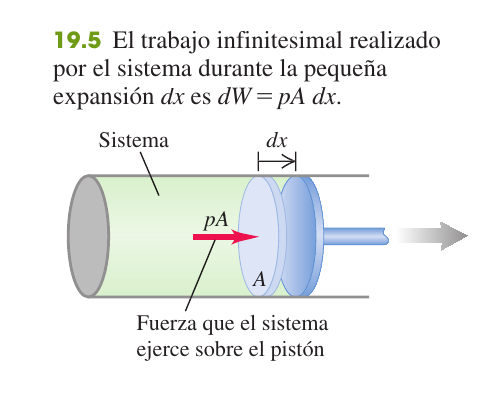
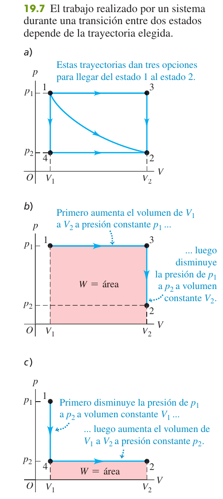
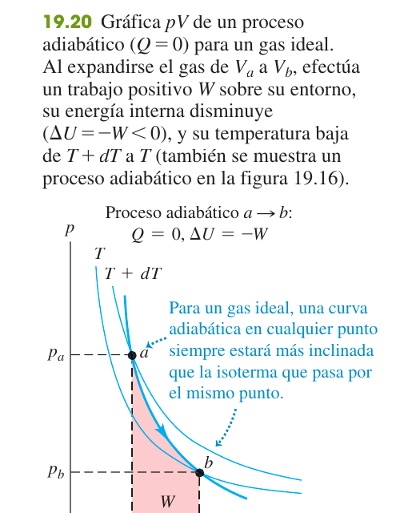
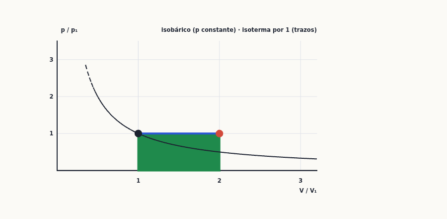

Primera ley de la termodinámica
La conservación de la energía aplicada al calor: cuánto trabajo hace un gas al cambiar de volumen (el área bajo la curva $pV$), por qué el calor y el trabajo dependen del camino pero la energía interna no, y cómo se resuelven los cuatro procesos clásicos (isóbaro, isócoro, isotermo y adiabático) y los ciclos de gas ideal que caen en examen una y otra vez.
El tema en 5 minutos P
Una sola idea: la energía se conserva también cuando hay calor. Un gas tiene una «cuenta» de energía, la energía interna $U$; el calor $Q$ que entra es un ingreso y el trabajo $W$ que el gas hace al expandirse es un gasto: $\Delta U=Q-W$. El trabajo es el área bajo la curva en el diagrama $pV$, así que depende del camino; el calor también; pero $\Delta U$ no, porque $U$ es una función de estado. Para un gas ideal, $U$ solo depende de $T$: $\Delta U=nC_V\Delta T$ en cualquier proceso. Con eso y los cuatro procesos (isóbaro, isócoro, isotermo, adiabático) se resuelven todos los ciclos que caen en examen.
Necesitas: trabajo $W=\int F\,dx$ y conservación de la energía (temas 6-7); calor, $Q=mc\Delta T$ y $Q=mL$ (tema 17); gas ideal $pV=nRT$, $C_V=\tfrac32R$ (monoatómico) y $\tfrac52R$ (diatómico), kelvin y presión absoluta (tema 18); integrar $\int dV/V=\ln V$.
El método en 4 pasos (úsalo siempre, en este orden)
Es la estrategia del libro para la primera ley (definir el sistema, tabla de $Q$, $W$ y $\Delta U$ por pasos, $\Delta U$ igual por cualquier camino, revisar signos). U p.626
Las 6 fórmulas que hay que saber
| Fórmula | Cuándo se usa |
|---|---|
| $\Delta U=Q-W$, $\ Q=\Delta U+W$; ciclo: $\Delta U=0$, $Q=W$ | en todos los problemas, tramo a tramo; «¿absorbe o desprende calor?», «dos trayectorias entre los mismos estados». |
| $W=\displaystyle\int p\,dV$ = área; isóbaro $p\Delta V$; isócoro $0$; isotermo $nRT\ln\dfrac{V_2}{V_1}$ | «¿cuánto trabajo efectúa el gas?», cada tramo de un ciclo; recta oblicua: trapecio. |
| $\Delta U=nC_V\Delta T=\dfrac{C_V}{R}\Delta(pV)$ (gas ideal, cualquier proceso) | «cambio de energía interna», «temperatura final», ciclos sin $n$. |
| $Q=nC_V\Delta T$ ($V$ cte), $\ Q=nC_p\Delta T$ ($p$ cte); $\ C_p=C_V+R$, $\ \gamma=C_p/C_V$ | «recipiente rígido», «a presión constante», «gas monoatómico / diatómico», «dado $\gamma$». |
| Adiabático: $pV^\gamma$ y $TV^{\gamma-1}$ constantes; $\ T_2=T_1\left(\dfrac{p_2}{p_1}\right)^{(\gamma-1)/\gamma}$ | «se comprime adiabáticamente», «razón de compresión», «sin intercambio de calor», motores. |
| $W_{adiab}=\dfrac{p_1V_1-p_2V_2}{\gamma-1}=nC_V(T_1-T_2)$; $\ e=\dfrac{W}{Q_H}$, $\ K=\dfrac{Q_{abs}}{|W|}$ | trabajo de un tramo adiabático; rendimiento de una máquina o refrigerador (se termina en el tema 20). |
Qué cae en examen
Es uno de los temas que más cae: en las convocatorias catalogadas hay 10 problemas de 3 puntos y 3 preguntas de teoría de 4 puntos. De los problemas, 6 son ciclos de gas ideal (X5-X10: tabla de $Q$, $W$ y $\Delta U$ por tramos y rendimiento) y 4 son primera ley y procesos sueltos (X1: dos trayectorias con $U$ dada; X2 y X3: adiabáticos; X4: sistema aislado de dos gases). X La teoría ha sido tres veces «Primera ley» o «Energía interna y primera ley de la termodinámica» (Febrero 2018 y Febrero 2020, 1ª semana, P-3; Febrero 2023, 1ª semana, P-4 opción B, con dos cuestiones). X Todos están resueltos enteros: los problemas en el Núcleo y la teoría (T1) en el bloque de teoría.
Elige tu ruta
Esta página + las cajas de §1-§6 (todas 🔴) + X1-X10 enteros + el guion T1. Si te sobra una hora, del Núcleo E5, E10 y E16.
Todo lo anterior + el resto del Núcleo (un método por ejercicio) + bloque «Práctica» + las cuestiones cortas del bloque de teoría.
Chuleta, errores frecuentes y lista de comprobación; rehaz sin mirar la tabla $W$, $\Delta U$, $Q$ de X6 y X8 y escribe el guion de T1 en una cara.
¿?¿Qué tipo de problema es? 🔴 P
Lee el enunciado, busca la pista en la primera columna y ve directo al método y al ejercicio modelo.
| Si el enunciado dice… | Haz esto | Ejercicio modelo |
|---|---|---|
| «se expande a presión constante», «se calienta a presión constante» | $W=p\Delta V$ ($=nR\Delta T$ en gas ideal) y $\Delta U=Q-W$; el calor es $nC_p\Delta T$. | E3, E1, E13 |
| «a temperatura constante», «compresión isotérmica» | Gas ideal: $\Delta U=0$, $Q=W=nRT\ln\dfrac{V_2}{V_1}=nRT\ln\dfrac{p_1}{p_2}$, $T$ en kelvin. | E6, E2, E7 |
| «recipiente rígido», «a volumen constante» | $W=0$, $Q=\Delta U=nC_V\Delta T$; $T\propto p$. | E4, E10 |
| «en la gráfica $pV$ de la figura…», «el tramo $bc$ es una recta» | $T$ por los productos $pV$; $W$ = área (rectángulo, trapecio, triángulo); $\Delta U=Q-W$. | E9, E8 |
| «por la trayectoria $abc$… por la $adc$…», «las energías internas son $U_a$, $U_b$…» | Sin gas ideal: $\Delta U$ de los datos (o de un camino completo) y $Q=\Delta U+W$ en cada tramo; $W=0$ en los verticales. | X1, E21 |
| «la temperatura final es igual a la inicial», o $p_aV_a=p_cV_c$ | $\Delta U=0$ por cualquier camino ⇒ $Q=W$ = área bajo el camino. | E22 |
| «absorbe … J de calor y efectúa … J de trabajo: temperatura final» | $\Delta U=Q-W$ ⇒ $\Delta T=\Delta U/(nC_V)$, sea cual sea el proceso. | E5 |
| «¿cuánto calor a volumen constante? ¿y a presión constante?», «$\gamma=1{,}127$: $C_V$ y $C_p$» | $Q=nC_V\Delta T$ o $nC_p\Delta T$; $C_p=C_V+R$; $C_V=R/(\gamma-1)$. | E10, E15, E14, E11, E12 |
| «se expande al doble: isotérmica, isobárica o adiabática» | La ley de dos estados de cada proceso: $pV$, $V/T$ o $pV^\gamma$ y $TV^{\gamma-1}$. | E16 |
| «se comprime adiabáticamente hasta la mitad / 0,09 veces», «expansión reversible y adiabática» | $p_2=p_1(V_1/V_2)^\gamma$, $T_2=T_1(V_1/V_2)^{\gamma-1}$, $W=\dfrac{p_1V_1-p_2V_2}{\gamma-1}$. | X2, X3, E17, E20 |
| «adiabático… hasta una presión de…» (te dan presiones, no volúmenes) | $T_2=T_1(p_2/p_1)^{(\gamma-1)/\gamma}$. | E18, X10 |
| «se expande adiabáticamente y realiza … J de trabajo» | $W=nC_V(T_1-T_2)$ ⇒ $T_2$ ⇒ $p_2$ con la relación adiabática. | E19 |
| «cilindro aislado», «pistón conductor», «se suelta el pistón» | Sistema aislado: $Q=W=0$ ⇒ $\Delta U_{total}=0$ ⇒ $T_f$; misma $p$ a los dos lados. | X4 |
| «ciclo isóbara / isócora / isoterma», «temperatura máxima del ciclo», «máquina térmica» | Tabla de estados → tabla $W$, $\Delta U$, $Q$ → $Q_H$ = suma de los calores que entran → $e=W/Q_H$. | X5, X6, X7, E23 |
| «ciclo… no se da $n$», «un proceso representado por una recta» | $\Delta U=\tfrac{C_V}{R}\Delta(pV)$; en la recta, mira dónde cambia de signo $dQ$. | X8 |
| «ciclo de refrigeración», ciclo antihorario | $W\lt0$; $K=Q_{abs}/|W|$ con el calor que absorbe el gas. | X9 |
| «compresión adiabática… calentamiento a presión constante… expansión adiabática… isócora», «masa de aire de 1 kg» | En las adiabáticas, $W=-\Delta U$ (no áreas); por kg: $c_V=c_p/\gamma$, $r=c_p-c_V$. | X10, E24 |
| «ecuación de van der Waals: trabajo de la expansión isotérmica» | Despeja $p(V)$ e integra $\int p\,dV$. | Problema práctico |
| «Desarrolle el tema: Energía interna y primera ley», «¿se puede saber si fue calor o trabajo?» | Guion: signos → $W=\int p\,dV$ → trayectorias → $\Delta U=Q-W$ → procesos → gas ideal. | Teoría |
1Sistema, signos y trabajo al cambiar el volumen 🔴 U p.618-622
🎯 Antes de leer: un gas se expande empujando un pistón. ¿Hace el gas trabajo positivo o negativo? ¿Y cuando se comprime? (Piénsalo 20 s; la respuesta está en esta sección.)
Un sistema es lo que decides estudiar (el gas de un cilindro, el agua de una olla); todo lo demás es el entorno. Su estado lo dan $p$, $V$, $T$ y $n$ (tema 18) y un proceso es el paso de un estado a otro. La energía entra o sale solo de dos formas: calor $Q$ (por diferencia de temperatura) y trabajo $W$ (el gas empuja o es empujado). Piensa en una cuenta bancaria: la energía interna $U$ es el saldo, el calor que entra es un ingreso y el trabajo que hace el gas, un gasto.
Signos (los del libro y los de los exámenes): $Q\gt0$ si entra calor, $Q\lt0$ si sale; $W\gt0$ si el sistema hace trabajo sobre el entorno (se expande), $W\lt0$ si el entorno lo comprime.
Error típico: en mecánica (tema 6) el trabajo positivo es el que se hace sobre el cuerpo; aquí $W\gt0$ es el que hace el sistema. Por eso la primera ley lleva un signo menos ($\Delta U=Q-W$). Fija la convención al empezar y no la cambies a mitad de problema.
U p.618-619
El gas empuja el pistón con la fuerza $pA$ a lo largo de $dx$: $dW=pA\,dx=p\,dV$. $$dW=p\,dV\quad(19.1)\qquad\qquad W=\int_{V_1}^{V_2}p\,dV\quad(19.2)$$ En el diagrama $pV$, $W$ es el área bajo la curva entre $V_1$ y $V_2$: positiva si el tramo va hacia la derecha (expansión), negativa si va hacia la izquierda (compresión) y cero en un tramo vertical ($V$ constante), por mucho que cambie $p$. Para un cambio finito hay que saber cómo varía $p$ con $V$:
| Tramo | Trabajo |
|---|---|
| Horizontal ($p$ constante) | $W=p\,(V_2-V_1)$ (19.3); en gas ideal, $W=nR\Delta T$ |
| Vertical ($V$ constante) | $W=0$ |
| Isoterma de gas ideal ($p=nRT/V$) | $W=nRT\displaystyle\int_{V_1}^{V_2}\frac{dV}{V}=nRT\ln\frac{V_2}{V_1}=nRT\ln\frac{p_1}{p_2}$ (ejemplo 19.1) |
| Recta oblicua | área del trapecio: $W=\tfrac12(p_1+p_2)(V_2-V_1)$ |
Ejemplo mínimo: 1,00 mol de gas ideal a 300 K se expande isotérmicamente al doble de volumen: $W=(1{,}00)(8{,}314)(300)\ln2=+1729$ J. A presión constante $p_1$ el rectángulo valdría $p_1V_1=nRT=2494$ J: más área, porque en la isoterma la presión va bajando (figura de abajo). P
Error típico: usar $W=p\Delta V$ cuando $p$ no es constante (isoterma, adiabática, recta oblicua), o mezclar litros y atmósferas con $R=8{,}314$ J/(mol·K): $1\ \text{L·atm}=101{,}3$ J.
U p.620-621✍️ Comprueba que lo has entendido (2 min)
- Un gas se expande de 2,0 L a 5,0 L a la presión constante de $1{,}5\times10^5$ Pa. ¿Cuánto trabajo hace?
Ver respuesta
$W=p\Delta V=(1{,}5\times10^5)(3{,}0\times10^{-3})=+450$ J (positivo: expansión). - 2,00 mol de gas ideal a 400 K se comprimen isotérmicamente hasta un tercio de su volumen. ¿Cuánto vale $W$?
Ver respuesta
$W=nRT\ln\dfrac{V_2}{V_1}=(2{,}00)(8{,}314)(400)\ln\tfrac13=-7307$ J. Negativo: el entorno hace trabajo sobre el gas. - En un tramo vertical del diagrama $pV$ la presión de un gas sube de 1 atm a 3 atm. ¿Qué trabajo hace el gas?
Ver respuesta
Ninguno: $V$ no cambia, no hay área bajo un segmento vertical, $W=0$.
2Trayectorias, energía interna y primera ley 🔴 U p.622-628
🎯 Antes de leer: un gas puede pasar del estado A al B por dos caminos distintos. ¿Es el mismo el calor en los dos? ¿Y el cambio de energía interna? (Piénsalo 20 s; la respuesta está en esta sección.)

Ir del estado 1 al 2 «por arriba» o «por abajo» en el diagrama $pV$ encierra áreas distintas: el trabajo depende de la trayectoria, como los kilómetros de un viaje dependen de la carretera y no solo de las dos ciudades. Con el calor pasa lo mismo: entre los mismos estados, la expansión lenta sobre un mechero tiene $Q\gt0$ y $W\gt0$, y la expansión libre contra el vacío en un recipiente aislado tiene $Q=0$ y $W=0$ (figura 19.8). Por eso no existe «el calor contenido en un cuerpo» ni «el trabajo contenido»: son energía en tránsito.
En un ciclo (el sistema vuelve al estado inicial) el trabajo neto es el área encerrada: positivo si se recorre en sentido horario (máquina), negativo en antihorario (refrigerador).
Ejemplo mínimo (ejemplo 19.3): un sistema recorre un ciclo en sentido antihorario con $W=-500$ J. Como vuelve al estado inicial, $\Delta U=0$ y $Q=W=-500$ J: salen 500 J de calor. U p.626-627
Error típico: sumar las áreas bajo las dos ramas de un ciclo en vez de restarlas; decir «el gas tiene tantos julios de calor».
U p.622-623
La energía interna $U$ es la suma de las energías cinéticas y potenciales de interacción de todas las partículas del sistema. No incluye la energía cinética del sistema como un todo ni su energía potencial en un campo externo (subir el cilindro a una torre no cambia la $U$ del gas).
$$\Delta U=Q-W\quad(19.4)\qquad\Longleftrightarrow\qquad Q=\Delta U+W\quad(19.5)\qquad\qquad dU=dQ-p\,dV\quad(19.7)$$ $Q$ y $W$ dependen del camino, pero su diferencia no: $U$ es una función de estado y $\Delta U$ solo depende de los estados inicial y final. Dos casos especiales: ciclo ⇒ $\Delta U=0$ y $Q=W$; sistema aislado ⇒ $Q=W=0$ y $\Delta U=0$ (X4).
Ejemplo mínimo (ejemplo 19.5), válido para cualquier sustancia: 1 g de agua hierve a 1 atm y pasa de 1 cm³ a 1671 cm³ de vapor. $W=p\Delta V=(1{,}013\times10^5)(1670\times10^{-6})=169$ J; $Q=mL_v=(10^{-3})(2{,}256\times10^6)=2256$ J; $\Delta U=Q-W=2087$ J. Casi toda la energía se queda dentro, separando las moléculas. U p.628
Error típico: escribir $\Delta U=Q+W$ usando «$W\gt0$ si lo hace el gas», o creer que $\Delta U=Q$ siempre (solo si $W=0$). Y pensar que si entra calor la temperatura sube: si el gas trabaja más de lo que recibe, se enfría (E5).
U p.623-628- Define el sistema y escribe los estados de cada paso.
- Tabla: una fila por paso, columnas $Q$, $W$, $\Delta U$. Rellena lo que te dan; cada fila cumple $\Delta U=Q-W$ y el $\Delta U$ total es la suma de las filas.
- Mismos extremos, mismo $\Delta U$: si conoces un camino completo, saca de él $\Delta U$ y úsalo en cualquier otro (X1, E21).
- Revisa los signos: $Q\gt0$ entra calor; $W\gt0$ el sistema se expande.
✍️ Comprueba que lo has entendido (2 min)
- Un gas absorbe 500 J de calor y efectúa 200 J de trabajo. ¿Cuánto cambia su energía interna?
Ver respuesta
$\Delta U=Q-W=500-200=+300$ J. - Entre dos estados, por el camino 1 entran 80 J de calor y el sistema hace 30 J de trabajo. Por el camino 2 hace 10 J de trabajo. ¿Cuánto calor entra por el camino 2?
Ver respuesta
$\Delta U=80-30=50$ J por cualquier camino ⇒ $Q_2=\Delta U+W_2=50+10=60$ J. - Un ciclo recorrido en sentido antihorario encierra un área de 120 J. ¿Cuánto valen $W$, $\Delta U$ y $Q$ en el ciclo?
Ver respuesta
Antihorario ⇒ $W=-120$ J; ciclo ⇒ $\Delta U=0$; $Q=W=-120$ J: el sistema cede 120 J de calor.
3Los cuatro procesos 🔴 U p.628-630
🎯 Antes de leer: ¿en qué proceso de un gas ideal todo el calor que entra se convierte en trabajo? ¿Y en cuál todo se queda como energía interna? (Piénsalo 20 s; la respuesta está en esta sección.)
| Proceso | Condición | Primera ley simplificada | Trabajo |
|---|---|---|---|
| Adiabático | $Q=0$ (aislado o muy rápido) | $\Delta U=-W$ (19.8) | se obtiene de $\Delta U$ (o de 19.25-19.26 en gas ideal) |
| Isocórico | $V$ constante | $W=0$, $\Delta U=Q$ (19.9) | $0$ (segmento vertical) |
| Isobárico | $p$ constante | $Q=\Delta U+p\Delta V$ | $W=p(V_2-V_1)$ (19.10) |
| Isotérmico | $T$ constante | en general, ninguno de $Q$, $W$, $\Delta U$ es cero; gas ideal: $\Delta U=0$, $Q=W$ | gas ideal: $nRT\ln(V_2/V_1)$ |
Casi todos los ciclos de examen son combinaciones de estos cuatro «movimientos» en el diagrama $pV$. Adiabático ($Q=0$: recipiente aislado o proceso muy rápido): si el gas se expande ($W\gt0$), $\Delta U\lt0$ y se enfría; si se comprime, se calienta (la bomba de bicicleta se calienta, la botella de champán recién abierta forma niebla). Isocórico: calentar un gas en un recipiente rígido. Isobárico: hervir agua en una olla abierta. Isotérmico: contacto con un foco a esa temperatura; suele ser lento.
Error típico: confundir isotermo con adiabático. En el isotermo $T$ no cambia pero sí hay calor (el que se convierte en trabajo); en el adiabático no hay calor pero $T$ sí cambia.
U p.629✍️ Comprueba que lo has entendido (2 min)
- A un gas en un recipiente rígido se le dan 250 J de calor. ¿$W$ y $\Delta U$?
Ver respuesta
Isocórico: $W=0$ y $\Delta U=Q=+250$ J (su temperatura sube). - Un gas se expande adiabáticamente y hace 400 J de trabajo. ¿$\Delta U$? ¿Se calienta o se enfría?
Ver respuesta
$Q=0$ ⇒ $\Delta U=-W=-400$ J: paga el trabajo con su energía interna y se enfría. - A un gas ideal que se mantiene a temperatura constante se le extraen 300 J de calor. ¿$\Delta U$ y $W$? ¿Se expande o se comprime?
Ver respuesta
Isotermo de gas ideal: $\Delta U=0$ ⇒ $W=Q=-300$ J: se comprime.
4Gas ideal: energía interna, $C_V$, $C_p$ y $\gamma$ 🔴 U p.630-633
🎯 Antes de leer: para un gas ideal, ¿de qué magnitud depende únicamente la energía interna? (Piénsalo 20 s; la respuesta está en esta sección.)
En un gas ideal las moléculas no se atraen: no hay energía potencial entre ellas y $U$ es solo energía cinética, que depende de la temperatura (tema 18). Se comprueba con la expansión libre de la figura 19.8b: recipiente aislado ($Q=0$), sin pistón ($W=0$) ⇒ $\Delta U=0$, y la temperatura final de un gas poco denso es la inicial aunque $p$ y $V$ hayan cambiado.
Consecuencias: en una isoterma de gas ideal, $\Delta U=0$ y $Q=W$; y si $T_{final}=T_{inicial}$ por cualquier camino, $\Delta U=0$ (E22, tramo $C\to A$ de X5).
Error típico: concluir «$T$ final = $T$ inicial ⇒ $Q=0$». Solo implica $\Delta U=0$, es decir, $Q=W$.
U p.630¿Cuánto calor hay que dar a un mol para subirle 1 K? Depende de cómo. A volumen constante todo el calor va a $U$; a presión constante el gas se expande y parte del calor se va en trabajo, así que hace falta más.
$$Q=nC_V\Delta T\ \ (V\ \text{cte},\ 19.12)\qquad Q=nC_p\Delta T\ \ (p\ \text{cte},\ 19.14)$$ Como $U$ solo depende de $T$, lo que vale a volumen constante vale siempre: $$dU=nC_V\,dT\quad(19.13)\qquad\Rightarrow\qquad \Delta U=nC_V\Delta T=\frac{C_V}{R}\,\Delta(pV)\quad\text{en cualquier proceso del gas ideal.}$$ A presión constante $dW=p\,dV=nR\,dT$ (19.15); con la primera ley, $nC_p\,dT=nC_V\,dT+nR\,dT$: $$C_p=C_V+R\quad(19.17)\qquad\gamma=\frac{C_p}{C_V}\quad(19.18)\qquad C_V=\frac{R}{\gamma-1}$$
| Gas ideal | $C_V$ | $C_p$ | $\gamma$ |
|---|---|---|---|
| Monoatómico (He, Ne, Ar) | $\tfrac32R$ | $\tfrac52R$ | $5/3$ |
| Diatómico (aire, N₂, O₂), temperatura ambiente | $\tfrac52R$ | $\tfrac72R$ | $7/5=1{,}40$ |
Ejemplo mínimo (ejemplo 19.6): se enfrían 2500 mol de aire ($\gamma=1{,}400$) de 35,0 °C a 26,0 °C a presión constante. $C_V=\dfrac{8{,}314}{0{,}400}=20{,}79$ J/(mol·K) y $\Delta U=nC_V\Delta T=(2500)(20{,}79)(-9{,}0)=-4{,}68\times10^5$ J; con $C_V$, aunque el proceso sea a presión constante. U p.633
Error típico: escribir $\Delta U=nC_p\Delta T$ en un proceso isobárico ($nC_p\Delta T$ es el calor; $\Delta U$ es siempre $nC_V\Delta T$), o usar $C_V=\tfrac52R$ con un gas monoatómico.
U p.631-633| Gas | $C_V$ (J/mol·K) | $C_p$ (J/mol·K) | Gas | $C_V$ | $C_p$ |
|---|---|---|---|---|---|
| He | 12,47 | 20,78 | CO | 20,85 | 29,16 |
| H₂ | 20,42 | 28,74 | CO₂ | 28,46 | 36,94 |
| N₂ | 20,76 | 29,07 | SO₂ | 31,39 | 40,37 |
| O₂ | 20,85 | 29,17 | H₂S | 25,95 | 34,60 |
✍️ Comprueba que lo has entendido (2 min)
- Se calientan 2,00 mol de helio 40,0 K a presión constante. ¿Cuánto calor hace falta? ¿Cuánto valen $\Delta U$ y $W$?
Ver respuesta
$Q=nC_p\Delta T=(2{,}00)(\tfrac52\cdot8{,}314)(40{,}0)=1663$ J; $\Delta U=nC_V\Delta T=998$ J; $W=nR\Delta T=665$ J (y $998+665=1663$ ✓). - Un gas ideal tiene $\gamma=1{,}30$. ¿Cuánto valen $C_V$ y $C_p$?
Ver respuesta
$C_V=\dfrac{R}{\gamma-1}=\dfrac{8{,}314}{0{,}30}=27{,}71$ J/(mol·K); $C_p=C_V+R=36{,}03$ J/(mol·K). - Un gas ideal se expande libremente contra el vacío dentro de un recipiente aislado. ¿Cuánto cambia su temperatura?
Ver respuesta
Nada: $Q=0$ y $W=0$ ⇒ $\Delta U=0$, y como $U$ solo depende de $T$, $\Delta T=0$.
5Proceso adiabático del gas ideal 🔴 U p.634-636
🎯 Antes de leer: al comprimir rápido el aire de una bomba de bicicleta, se calienta. ¿Ha entrado calor del exterior? ¿De dónde viene el calentamiento? (Piénsalo 20 s; la respuesta está en esta sección.)
Comprime un gas deprisa (bomba de bicicleta, motor): no le da tiempo a ceder calor, todo el trabajo se queda como energía interna y el gas se calienta. Al expandirse sin recibir calor, paga el trabajo con su $U$ y se enfría. Por eso, comprimiendo, la presión sube más que en la isoterma.
Con $Q=0$: $nC_V\,dT=-p\,dV=-\dfrac{nRT}{V}dV$, es decir $\dfrac{dT}{T}+(\gamma-1)\dfrac{dV}{V}=0$ (19.20). Integrando:
$$TV^{\gamma-1}=\text{cte}\ \ (19.21\text{-}19.22)\qquad pV^{\gamma}=\text{cte}\ \ (19.23\text{-}19.24)\qquad T_2=T_1\left(\frac{p_2}{p_1}\right)^{(\gamma-1)/\gamma}$$ $$W=nC_V(T_1-T_2)\ \ (19.25)\qquad W=\frac{p_1V_1-p_2V_2}{\gamma-1}\ \ (19.26)$$ La tercera sale de sustituir $V=nRT/p$ en $TV^{\gamma-1}$ y se usa cuando te dan presiones y no volúmenes. Temperaturas siempre en kelvin.
Ejemplo mínimo (ejemplo 19.7): un motor diésel comprime aire ($\gamma=1{,}400$) a 1/15 de su volumen desde 300 K y $1{,}01\times10^5$ Pa: $T_2=300\cdot15^{0{,}400}=886$ K y $p_2=(1{,}01\times10^5)\,15^{1{,}400}=44{,}8\times10^5$ Pa. Basta para encender el gasóleo sin chispa. U p.636
Error típico: (1) usar $p_1V_1=p_2V_2$ (eso es la isoterma); (2) $\gamma=1{,}4$ con un gas monoatómico ($5/3$); (3) temperaturas en °C dentro de $TV^{\gamma-1}$; (4) $(p_2/p_1)^{\gamma-1}$ en vez de $(p_2/p_1)^{(\gamma-1)/\gamma}$; (5) dar positivo el trabajo de una compresión.
U p.634-635

✍️ Comprueba que lo has entendido (2 min)
- Aire ($\gamma=1{,}40$) a 300 K se comprime adiabáticamente hasta 1/10 de su volumen. ¿Temperatura final?
Ver respuesta
$T_2=T_1\left(\dfrac{V_1}{V_2}\right)^{\gamma-1}=300\cdot10^{0{,}40}=754$ K. - Un gas monoatómico se expande adiabáticamente hasta el doble de volumen. ¿Por cuánto se multiplican $p$ y $T$?
Ver respuesta
$p_2/p_1=2^{-5/3}=0{,}315$ y $T_2/T_1=2^{-2/3}=0{,}630$: baja más la presión que en la isoterma (0,5) y el gas se enfría. - En una expansión adiabática de un gas monoatómico, $p_1V_1=600$ J y $p_2V_2=400$ J. ¿$W$, $Q$ y $\Delta U$?
Ver respuesta
$W=\dfrac{600-400}{2/3}=300$ J; $Q=0$; $\Delta U=-300$ J.
6Método para ciclos de gas ideal 🔴 P
🎯 Antes de leer: en un ciclo completo, ¿cuánto vale $\Delta U$? ¿Qué representa el área encerrada en el diagrama $pV$? (Piénsalo 20 s; la respuesta está en esta sección.)
Un ciclo es una vuelta completa en el diagrama $pV$: como $U$ es función de estado, $\sum\Delta U=0$ y el calor neto que entra sale como trabajo neto. Una máquina gira en sentido horario ($W\gt0$); un refrigerador, en antihorario ($W\lt0$).
- Tabla de estados ($p$, $V$, $T$) con $pV=nRT$. Si no te dan $n$, trabaja con $pV$. Si $p_1V_1=p_2V_2$, esos dos estados están en la misma isoterma. Si piden $T_{max}$, mira hacia dónde crece $pV$.
- Identifica cada tramo: vertical ⇒ isócoro; horizontal ⇒ isóbaro; hipérbola ⇒ isotermo; más empinada que la isoterma ⇒ adiabático; recta oblicua ⇒ trapecio.
- Por tramo: $W$ ($0$, $p\Delta V$, $nRT\ln\frac{V_2}{V_1}$, $\frac{p_1V_1-p_2V_2}{\gamma-1}$ o el trapecio), $\Delta U=nC_V\Delta T=\frac{C_V}{R}\Delta(pV)$ y $Q=\Delta U+W$.
- Comprueba: $\sum\Delta U=0$, $W_{neto}=\sum Q$ y el signo de $W_{neto}$ coincide con el sentido de giro.
- Rendimiento (tema 20): $Q_H$ = suma de todos los calores que entran; $|Q_C|$ = suma de los que salen; $e=W/Q_H=1-|Q_C|/Q_H$. Refrigerador: $K=Q_{abs}/|W|$.
Usar $C_V$ para el calor de un tramo isóbaro (hace falta $C_p$); olvidar el calor de la isoterma en $Q_H$; poner en $Q_H$ el calor neto del ciclo; trabajar en litros y atmósferas sin pasar a SI. En un tramo recto que cruza isotermas, el calor puede cambiar de signo dentro del tramo (X8).
P
✍️ Comprueba que lo has entendido (2 min)
- En los cuatro tramos de un ciclo el calor vale $+500$, $-200$, $+100$ y $-250$ J. ¿$W$ del ciclo, $Q_H$ y rendimiento?
Ver respuesta
$W=\sum Q=150$ J; $Q_H=500+100=600$ J; $e=150/600=0{,}25$. - Un gas ideal diatómico pasa de un estado con $pV=200$ J a otro con $pV=500$ J. ¿Cuánto cambia su energía interna?
Ver respuesta
$\Delta U=\tfrac{C_V}{R}\Delta(pV)=\tfrac52(500-200)=750$ J, sin necesidad de $n$ ni de $T$. - En un ciclo entran 900 J en un tramo y 300 J en otro, y salen 1000 J en total. ¿$W$, $Q_H$ y $e$?
Ver respuesta
$W=900+300-1000=200$ J; $Q_H=1200$ J (no el neto); $e=200/1200=0{,}167$.
7Ejercicios resueltos
Aquí están, enteros, los 10 problemas de examen real del tema (X1-X10, todos en el Núcleo) y la pregunta de teoría de Febrero 2023 (T1, en el bloque de teoría), más los 24 problemas del solucionario (traducidos y ampliados) y el problema práctico de U, ordenados por método, no por fuente: dieciocho en el Núcleo (uno por método; los diez de examen y ocho del libro) y diecisiete de Práctica que repiten esos métodos en otras situaciones. Los enunciados del libro son los de los ejercicios y problemas de fin de capítulo de U (pp. 639-645). Intenta resolver tú antes de abrir la solución. Cada ejercicio termina con su receta. Datos y convenciones de U: $R=8{,}314$ J/(mol·K); $1\ \text{atm}=1{,}013\times10^5$ Pa; $1\ \text{L·atm}=101{,}3$ J; $T_K=T_C+273{,}15$; $Q>0$ si entra calor; $W>0$ si el gas hace trabajo.
| Ejercicio | Qué tipo es | Método que te llevas |
|---|---|---|
| E3 | Isóbaro, cualquier sustancia | $W=p\Delta V$ y $\Delta U=Q-W$, sin usar $pV=nRT$ |
| E6 | Isotermo de gas ideal | $W=nRT\ln(p_1/p_2)$ con $T$ en K; $\Delta U=0$ y $Q=W$ |
| E9 | Proceso leído en una gráfica $pV$ | $T$ mínima donde $pV$ es mínimo; $W$ por áreas (trapecio); $\Delta U=Q-W$ |
| X1 · Feb 2024 2ª | Dos trayectorias con $U$ dada (sin gas ideal) | $W=0$ en los tramos verticales; $Q=\Delta U+W$ tramo a tramo |
| E22 | Extremos en la misma isoterma | $p_aV_a=p_cV_c$ ⇒ $\Delta U=0$ ⇒ $Q=W$ = área de cada camino |
| E5 | Temperatura final con la primera ley | $\Delta U=Q-W$ ⇒ $\Delta T=\Delta U/(nC_V)$ en cualquier proceso |
| E10 | Calor a $V$ cte frente a $p$ cte | $Q=nC_V\Delta T$ o $nC_p\Delta T$; $\Delta U=nC_V\Delta T$ en los dos |
| E16 | Mismo $\Delta V$ por tres procesos | Ley de dos estados de cada proceso: $pV$, $V/T$, $pV^\gamma$ y $TV^{\gamma-1}$ |
| X2 · Feb 2022 1ª | Compresión adiabática | $p_2=p_1(V_1/V_2)^\gamma$; $W=\frac{p_1V_1-p_2V_2}{\gamma-1}$; $T_2/T_1=(V_1/V_2)^{\gamma-1}$ |
| X3 · Sep 2019 Reserva | Trabajo adiabático sin $n$ ni $T$ | $W=\frac{p_1V_1}{\gamma-1}\left[1-(V_1/V_2)^{\gamma-1}\right]$ |
| E19 | Adiabática con el trabajo dado | $W=nC_V(T_1-T_2)$ ⇒ $T_2$ ⇒ $p_2$ con la relación adiabática |
| X4 · Sep 2019 Original | Sistema aislado de dos gases | $Q=W=0$ ⇒ $\Delta U_{total}=0$ ⇒ $T_f$; misma $p$ a los dos lados del pistón |
| X5 · Feb 2019 1ª | Ciclo isóbara-isócora-isoterma con $n=1$ | $pV$ iguales ⇒ isoterma; tabla $W$, $\Delta U$, $Q$; $e=W/Q_H$ |
| X6 · Feb 2023 2ª | Máquina con $T_{max}$ dada | Localiza $T_{max}$ → estados → $Q_H$ = suma de los calores que entran; compara con Carnot |
| X7 · Sep 2024 | El mismo ciclo con helio | Como X6; kJ/(kmol·K) = J/(mol·K) |
| X8 · Feb 2025 2ª | Ciclo sin $n$ con un tramo recto | $\Delta U=\tfrac32\Delta(pV)$; en la recta $dQ$ cambia de signo en $V^*$ |
| X9 · Feb 2025 1ª | Refrigerador (ciclo antihorario) | Tabla con $\tfrac52\Delta(pV)$; $K=Q_{abs}/|W|$ |
| X10 · Feb 2019 2ª | Ciclo con dos adiabáticas, datos por kg | $c_V=c_p/\gamma$, $r=c_p-c_V$; $T_2=T_1(p_2/p_1)^{(\gamma-1)/\gamma}$; $e=1-|Q_C|/Q_H$ |
E3 — Problema 19.9: Expansión a presión constante E 19-3 y 19-4 🔴 U p.640
Un gas en un cilindro se expande desde un volumen de 0,110 m³ a 0,320 m³. Fluye calor hacia el gas con la rapidez mínima que permite mantener la presión constante a $1{,}65\times10^5$ Pa durante la expansión. El calor total agregado es de $1{,}15\times10^5$ J. a) Calcule el trabajo efectuado por el gas. b) Calcule el cambio de energía interna del gas. c) ¿Importa si el gas tiene comportamiento ideal o no? ¿Por qué?
Inténtalo primero; abre una pista solo si te atascas.
Pista 1
A presión constante, para cualquier sustancia, $W=p\Delta V$; después $\Delta U=Q-W$.
Pista 2
No se usa $pV=nRT$: la primera ley no exige que sea un gas ideal.
Solución completa
- a) $W=p\Delta V=1{,}65\times10^5\cdot0{,}210=\mathbf{3{,}47\times10^4\ J}$.
- b) $\Delta U=Q-W=1{,}15\times10^5-3{,}47\times10^4=\mathbf{8{,}04\times10^4\ J}$.
- c) No importa: $W=p\Delta V$ (definición de trabajo a presión constante) y la primera ley valen para cualquier sustancia; no se ha usado $pV=nRT$.
E6 — Problema 19.3: Compresión isotérmica hasta triplicar la presión E 19-1 🔴 U p.639
Dos moles de gas ideal están comprimidos en un cilindro a temperatura constante de 65,0 °C hasta que se triplique la presión original. a) Dibuje una gráfica $pV$ para este proceso. b) Calcule la cantidad de trabajo efectuado.
Inténtalo primero; abre una pista solo si te atascas.
Pista 1
Isotermo: $W=nRT\ln(V_2/V_1)=nRT\ln(p_1/p_2)$ con $T$ en kelvin.
Pista 2
Comprimir da trabajo negativo: comprueba el signo del logaritmo.
Solución completa
- a) Hipérbola $pV=$ cte recorrida hacia la izquierda y arriba.
- b) Isotermo (ejemplo 19.1): $W=nRT\ln\dfrac{p_1}{p_2}=2\cdot8{,}314\cdot338{,}15\cdot\ln\tfrac13=\mathbf{-6180\ J}$ ($T$ en kelvin).
E9 — Problema 19.11: Proceso abc leído en la gráfica E 19-4 🟡 U p.640
En la figura E19.11 se muestra el diagrama $pV$ del proceso $abc$ que implica 0,0175 moles de un gas ideal ($a$: 2,0 L y 0,20 atm; $b$: 2,0 L y 0,50 atm; $c$: 6,0 L y 0,30 atm; $bc$ es una recta). a) ¿Cuál fue la temperatura más baja que alcanzó el gas en este proceso? ¿Dónde ocurrió? b) ¿Cuánto trabajo efectuó el gas o se realizó sobre éste de $a$ a $b$? ¿Y de $b$ a $c$? c) Si se agregaron 215 J de calor en el gas durante $abc$, ¿cuántos de esos joules se destinaron a la energía interna?
Inténtalo primero; abre una pista solo si te atascas.
Pista 1
$T=pV/nR$ es mínima donde $pV$ es mínimo; el tramo vertical no hace trabajo.
Pista 2
El trabajo de la recta es el área del trapecio (con la presión media), no un solo valor de $p$.
Solución completa
- a) $T=pV/nR$ es mínima donde $pV$ es mínimo: en $a$ ($pV=0{,}4$ L·atm frente a 1,0 en $b$ y 1,8 en $c$). $T_a=\dfrac{0{,}20\cdot1{,}013\times10^5\cdot2{,}0\times10^{-3}}{0{,}0175\cdot8{,}314}=\mathbf{278{,}5\ K}$ en el punto $a$.
- b) $W_{ab}=0$ (vertical). $W_{bc}$ = área del trapecio $=\frac12(0{,}50+0{,}30)\text{ atm}\cdot4{,}0\text{ L}=1{,}6$ L·atm $=\mathbf{162\ J}$ (lo efectúa el gas).
- c) $\Delta U=Q-W=215-162=\mathbf{53\ J}$.
X1 — Dos trayectorias abc y adc entre los mismos estados X 🔴 examen real U p.620-626
Examen Febrero 2024 (2ª semana) P-2 (3 puntos). Un sistema termodinámico se lleva del estado $a$ al estado $c$ de la figura siguiendo la trayectoria $abc$, el trabajo $W$ efectuado por el sistema es de 450 J. Por la trayectoria $adc$ el trabajo es $W=120$ J. Las energías internas de los cuatro estados que se ilustran en la figura son $U_a=150$ J, $U_b=240$ J, $U_c=680$ J y $U_d=330$ J. Calcule el flujo de calor $Q$ para cada uno de los cuatro procesos: $ab$, $bc$, $ad$, $dc$. En cada proceso, ¿el sistema absorbe o desprende calor? (La figura es un rectángulo en el diagrama $pV$: $a$ abajo a la izquierda, $b$ encima de $a$, $c$ arriba a la derecha y $d$ abajo a la derecha; $ab$ y $dc$ verticales, $bc$ y $ad$ horizontales.) Este ejercicio coincide con el problema 19.38 de U.
Inténtalo primero; abre una pista solo si te atascas.
Pista 1
La sustancia no es un gas ideal: solo vale la primera ley, $Q=\Delta U+W$, con $\Delta U=U_f-U_i$.
Pista 2
Los tramos verticales ($V$ constante) no hacen trabajo: todo el trabajo de $abc$ está en $bc$ y el de $adc$ en $ad$.
Solución completa
- Qué herramienta. No se dice que la sustancia sea un gas ideal: solo vale lo general. Usamos la primera ley $Q=\Delta U+W$ (19.5) con $\Delta U=U_{final}-U_{inicial}$ (función de estado).
- Trabajo de cada tramo leyendo la figura. Un tramo vertical ($V$ constante) no hace trabajo: $W_{ab}=0$, así que todo el trabajo de $abc$ está en $bc$: $W_{bc}=450$ J. Igualmente $W_{dc}=0$ y $W_{ad}=120$ J.
- Cambios de energía interna: $\Delta U_{ab}=240-150=90$ J; $\Delta U_{bc}=680-240=440$ J; $\Delta U_{ad}=330-150=180$ J; $\Delta U_{dc}=680-330=350$ J.
- Calores ($Q=\Delta U+W$): $Q_{ab}=90+0=\mathbf{+90\ J}$; $Q_{bc}=440+450=\mathbf{+890\ J}$; $Q_{ad}=180+120=\mathbf{+300\ J}$; $Q_{dc}=350+0=\mathbf{+350\ J}$. Los cuatro son positivos: en todos el sistema absorbe calor.
- Comprobación. $\Delta U_{ac}=530$ J por los dos caminos: $Q_{abc}-W_{abc}=980-450=530$ ✓; $Q_{adc}-W_{adc}=650-120=530$ ✓. $Q$ y $W$ cambian con el camino; $\Delta U$ no.
Reparto orientativo (el enunciado solo fija 3 puntos): una sola pregunta: $Q$ de $ab$, $bc$, $ad$, $dc$ y si absorbe o desprende. Dentro de cada apartado suele valorarse en este orden:
- Planteamiento (≈30 %): leer la figura: tramos verticales ($W=0$) y por tanto $W_{bc}=450$ J, $W_{ad}=120$ J.
- Ecuaciones (≈40 %): $\Delta U=U_f-U_i$ por tramo y $Q=\Delta U+W$.
- Resultado y unidades (≈30 %): $Q_{ab}=+90$ J, $Q_{bc}=+890$ J, $Q_{ad}=+300$ J, $Q_{dc}=+350$ J (los cuatro absorben calor) y comprobación $\Delta U_{ac}=530$ J.
Un resultado numérico sin planteamiento rara vez puntúa; un planteamiento correcto con un fallo de cuentas sí suele puntuar la mayor parte.
E22 — Problema 19.39: Enfriar a V constante y expandir a p constante E 19-13 🟡 U p.642
Aire (gas ideal) primero se enfría sin cambiar su volumen y luego se expande a presión constante, como indica la trayectoria $abc$ de la figura P19.39 ($a$: 0,02 m³, $3{,}0\times10^5$ Pa; $b$: 0,02 m³, $1{,}0\times10^5$ Pa; $c$: 0,06 m³, $1{,}0\times10^5$ Pa). a) ¿Cómo se compara la temperatura final con la inicial? b) ¿Cuánto calor intercambia el aire con su entorno en el proceso $abc$? ¿El aire absorbe o libera calor? c) Si ahora el aire se expande del estado $a$ al $c$ por la línea recta, ¿cuánto calor intercambia?
Inténtalo primero; abre una pista solo si te atascas.
Pista 1
Si $p_aV_a=p_cV_c$ entonces $T_c=T_a$ y $\Delta U_{ac}=0$ por cualquier camino.
Pista 2
Entonces $Q=W=$ área bajo el camino: la isóbara y la recta dan trabajos distintos.
Solución completa
- a) $\dfrac{T_c}{T_a}=\dfrac{p_cV_c}{p_aV_a}=\dfrac{6000}{6000}=1$ ⇒ $T_c=T_a$ ⇒ $\Delta U_{ac}=0$ por cualquier camino.
- b) $W_{ab}=0$; $W_{bc}=1{,}0\times10^5\cdot0{,}040=4000$ J ⇒ $Q_{abc}=W_{abc}=\mathbf{+4{,}0\times10^3\ J}$ (absorbe).
- c) Recta: $W$ = trapecio $=\frac12(3{,}0+1{,}0)\times10^5\cdot0{,}040=8000$ J ⇒ $Q_{ac}=\mathbf{+8{,}0\times10^3\ J}$.
- Mismos extremos, distinto $Q$ y $W$: dependen de la trayectoria.
E5 — Problema 19.10: Temperatura final con la primera ley E 19-4 🔴 U p.640
Cinco moles de un gas monoatómico con comportamiento ideal y temperatura inicial de 127 °C se expanden y, en el proceso, absorben 1500 J de calor y efectúan 2100 J de trabajo. Calcule la temperatura final del gas.
Inténtalo primero; abre una pista solo si te atascas.
Pista 1
Primera ley: $\Delta U=Q-W$ con $W>0$ si el gas se expande.
Pista 2
Gas ideal monoatómico: $\Delta U=n\tfrac32R\Delta T$ en cualquier proceso.
Solución completa
- $\Delta U=Q-W=1500-2100=-600$ J.
- Gas ideal monoatómico: $\Delta U=n\frac32R\Delta T$ (19.13) ⇒ $\Delta T=\dfrac{-600}{5\cdot1{,}5\cdot8{,}314}=-9{,}62$ K.
- $T_2=127-9{,}62=\mathbf{117\ ^\circ C}$. Se enfría: sale más energía como trabajo de la que entra como calor.
E10 — Problema 19.18: Calentar helio a volumen constante o a presión constante E 19-6 🔴 U p.641
Un cilindro contiene 0,0100 moles de helio a $T=27{,}0$ °C. a) ¿Cuánto calor se requiere para elevar la temperatura a 67,0 °C manteniendo constante el volumen? b) Si en cambio se mantiene constante la presión, ¿cuánto calor se requiere? c) ¿Qué explica la diferencia entre las respuestas a los incisos a) y b)? d) Si el gas es ideal, ¿cuánto cambia la energía interna en el inciso a)? ¿Y en el b)?
Inténtalo primero; abre una pista solo si te atascas.
Pista 1
Volumen constante: $Q=nC_V\Delta T$; presión constante: $Q=nC_p\Delta T$; en ambos $\Delta U=nC_V\Delta T$.
Pista 2
La diferencia es el trabajo $W=nR\Delta T$ del caso isóbaro.
Solución completa
- a) $Q=nC_V\Delta T=0{,}0100\cdot12{,}47\cdot40{,}0=\mathbf{4{,}99\ J}$ (tabla 19.1).
- b) $Q=nC_p\Delta T=0{,}0100\cdot20{,}78\cdot40{,}0=\mathbf{8{,}31\ J}$.
- c) A $p$ constante el gas se expande y hace trabajo $W=nR\Delta T=3{,}33$ J: ese calor extra sale como trabajo. Por eso $C_p=C_V+R$ (19.17).
- d) $\Delta U=nC_V\Delta T=\mathbf{4{,}99\ J}$ en los dos casos (mismo $\Delta T$, y $U$ solo depende de $T$).
E16 — Problema 19.32: Duplicar el volumen por tres caminos E 19-11 🔴 U p.642
Un cilindro contiene 0,100 moles de un gas monoatómico ideal a $1{,}00\times10^5$ Pa en $2{,}50\times10^{-3}$ m³. a) Calcule la temperatura inicial. b) El gas se expande al doble de su volumen; calcule la temperatura y la presión finales si la expansión es i. isotérmica, ii. isobárica, iii. adiabática.
Inténtalo primero; abre una pista solo si te atascas.
Pista 1
En cada caso la temperatura y la presión finales salen de la ley que cumple el proceso (Boyle, $V\propto T$ o $TV^{\gamma-1}=$ cte).
Pista 2
Monoatómico: $\gamma=5/3$.
Solución completa
- a) $T_1=\dfrac{p_1V_1}{nR}=\dfrac{250}{0{,}8314}=\mathbf{301\ K}$.
- i. Isotérmica: $T=\mathbf{301\ K}$; $p=p_1/2=\mathbf{5{,}00\times10^4\ Pa}$ (Boyle).
- ii. Isobárica: $p=\mathbf{1{,}00\times10^5\ Pa}$; $T=2T_1=\mathbf{601\ K}$ ($V\propto T$).
- iii. Adiabática ($\gamma=5/3$): $T=T_1\,2^{-2/3}=\mathbf{189\ K}$; $p=p_1\,2^{-5/3}=\mathbf{3{,}15\times10^4\ Pa}$.
- Lectura. Para el mismo $\Delta V$: la isobárica calienta (entra calor), la isoterma mantiene $T$, la adiabática enfría (paga el trabajo con su $U$). En el diagrama $pV$ la adiabática cae por debajo de la isoterma.
X2 — Compresión adiabática de un gas monoatómico X 🔴 examen real U p.634-635
Examen Febrero 2022 (1ª semana) P-2 (3 puntos). Un gas monoatómico con comportamiento ideal, está a una presión inicial de $3\times10^5$ Pa y ocupa un volumen de 0,10 m³. Se comprime adiabáticamente a un volumen mitad del inicial. a) Calcule la presión final. b) ¿Cuánto trabajo efectúa el gas? c) Determine la razón entre las temperaturas final e inicial del gas. ¿Esta compresión calienta o enfría el gas?
Inténtalo primero; abre una pista solo si te atascas.
Pista 1
Adiabática ($Q=0$) con monoatómico: $\gamma=5/3$ y $p_1V_1^\gamma=p_2V_2^\gamma$.
Pista 2
$W=(p_1V_1-p_2V_2)/(\gamma-1)$; $T_2/T_1=(V_1/V_2)^{\gamma-1}$. Una compresión adiabática calienta.
Solución completa
- Datos. $p_1=3\times10^5$ Pa, $V_1=0{,}10$ m³, $V_2=0{,}05$ m³; monoatómico ⇒ $\gamma=5/3$ (U p. 633). Adiabático ⇒ $Q=0$.
- a) Presión final con $p_1V_1^\gamma=p_2V_2^\gamma$ (19.24): $p_2=p_1\left(\dfrac{V_1}{V_2}\right)^{\gamma}=3\times10^5\cdot2^{5/3}=\mathbf{9{,}52\times10^5\ Pa}$. (Si fuese isotermo sería solo $6\times10^5$ Pa: en la adiabática sube más porque además sube $T$.)
- b) Trabajo con (19.26): $W=\dfrac{p_1V_1-p_2V_2}{\gamma-1}=\dfrac{30\,000-47\,622}{2/3}=\mathbf{-2{,}64\times10^4\ J}$. Negativo: el gas recibe trabajo.
- c) Razón de temperaturas con (19.22): $\dfrac{T_2}{T_1}=\left(\dfrac{V_1}{V_2}\right)^{\gamma-1}=2^{2/3}=\mathbf{1{,}587}>1$: la compresión calienta el gas. Razón: $Q=0$ ⇒ $\Delta U=-W=+26\,433$ J $>0$ y en un gas ideal $U$ solo depende de $T$.
- Comprobación con $pV=nRT$: $T_2/T_1=p_2V_2/(p_1V_1)=47\,622/30\,000=1{,}587$ ✓.
Reparto orientativo (el enunciado solo fija 3 puntos): a) presión final (1) · b) trabajo (1) · c) razón de temperaturas y conclusión (1). Dentro de cada apartado suele valorarse en este orden:
- Planteamiento (≈30 %): datos: adiabática ($Q=0$), monoatómico ($\gamma=5/3$), $V_2=V_1/2$.
- Ecuaciones (≈40 %): $p_2=p_1(V_1/V_2)^\gamma$, $W=(p_1V_1-p_2V_2)/(\gamma-1)$ y $T_2/T_1=(V_1/V_2)^{\gamma-1}$.
- Resultado y unidades (≈30 %): $p_2=9{,}52\times10^5$ Pa, $W=-2{,}64\times10^4$ J, $T_2/T_1=1{,}587$ y que la compresión calienta.
Un resultado numérico sin planteamiento rara vez puntúa; un planteamiento correcto con un fallo de cuentas sí suele puntuar la mayor parte.
X3 — Trabajo de una expansión adiabática reversible X 🔴 examen real U p.634-635
Examen Septiembre 2019 (Reserva) P-2 (3 puntos). Calcular el trabajo desarrollado por 3 l de un gas ideal monoatómico que partiendo de una presión de 1 atm se expansiona reversible y adiabáticamente hasta multiplicar por tres su volumen.
Inténtalo primero; abre una pista solo si te atascas.
Pista 1
Reversible y adiabática: $pV^\gamma=$ cte con $\gamma=5/3$; $p_1V_1$ en joules (L·atm a J).
Pista 2
$W=\dfrac{p_1V_1}{\gamma-1}\left[1-(V_1/V_2)^{\gamma-1}\right]$: no hace falta conocer $n$.
Solución completa
- Datos en SI. $V_1=3\times10^{-3}$ m³, $p_1=1{,}013\times10^5$ Pa ⇒ $p_1V_1=303{,}9$ J; $V_2=3V_1$; monoatómico ⇒ $\gamma=5/3$.
- «Reversible y adiabática» es la adiabática cuasiestática de U §19.8, donde vale $pV^\gamma=$ cte (19.23).
- Presión final: $p_2=p_1(V_1/V_2)^\gamma=p_1\,3^{-5/3}=0{,}160$ atm $=1{,}62\times10^4$ Pa.
- Trabajo (19.26), escrito solo con datos: $W=\dfrac{p_1V_1-p_2V_2}{\gamma-1}=\dfrac{p_1V_1}{\gamma-1}\left[1-\left(\dfrac{V_1}{V_2}\right)^{\gamma-1}\right]=\dfrac{303{,}9}{2/3}\left(1-3^{-2/3}\right)\approx\mathbf{237\ J}$.
- Lectura. $W>0$ (expansión). Como $Q=0$, $\Delta U=-237$ J: el gas se enfría ($T_2/T_1=3^{-2/3}=0{,}481$). No hace falta conocer $n$ ni $T$.
Reparto orientativo (el enunciado solo fija 3 puntos): una sola pregunta: trabajo de la expansión adiabática reversible. Dentro de cada apartado suele valorarse en este orden:
- Planteamiento (≈30 %): convertir a SI ($p_1V_1=303{,}9$ J), $\gamma=5/3$ y $V_2=3V_1$.
- Ecuaciones (≈40 %): $W=\dfrac{p_1V_1}{\gamma-1}\left[1-(V_1/V_2)^{\gamma-1}\right]$.
- Resultado y unidades (≈30 %): $W\approx237$ J (positivo: el gas se expande) con unidades.
Un resultado numérico sin planteamiento rara vez puntúa; un planteamiento correcto con un fallo de cuentas sí suele puntuar la mayor parte.
E19 — Problema 19.26: Presión final de una expansión adiabática con W dado E 19-8 y 19-9 🟡 U p.641
Cinco moles de un gas ideal monoatómico tienen una presión inicial de $2{,}50\times10^3$ Pa y un volumen inicial de 2,10 m³. Al expandirse adiabáticamente, el gas realiza 1480 J de trabajo. ¿Cuál es la presión final?
Inténtalo primero; abre una pista solo si te atascas.
Pista 1
Adiabática: $W=nC_V(T_1-T_2)$ da la temperatura final.
Pista 2
Después, con la relación $T$–$p$ de la adiabática, obtén $p_2$; no uses $W=p\Delta V$.
Solución completa
- Camino por energía: $T_1=\dfrac{p_1V_1}{nR}=\dfrac{5250}{41{,}57}=126{,}3$ K. Adiabático ⇒ $W=nC_V(T_1-T_2)$ (19.25) ⇒ $T_2=T_1-\dfrac{W}{n\frac32R}=126{,}3-23{,}7=102{,}6$ K.
- Presión con $T$–$p$ de la adiabática: $p_2=p_1\left(\dfrac{T_2}{T_1}\right)^{\gamma/(\gamma-1)}=2500\cdot(0{,}8121)^{5/2}=\mathbf{1{,}49\times10^3\ Pa}$.
- Comprobación por volúmenes: $V_2=V_1(T_1/T_2)^{1/(\gamma-1)}=2{,}870$ m³ y $p_2=p_1(V_1/V_2)^{5/3}=1486$ Pa ✓.
X4 — Dos gases separados por un pistón conductor en un cilindro aislado X 🔴 examen real U p.625-631
Examen Septiembre 2019 (Original) P-2 (3 puntos). Un cilindro térmicamente aislado, cerrado por ambos extremos, está provisto de un pistón conductor sin rozamiento, que lo divide en dos partes. Inicialmente se sujeta al pistón en el centro del cilindro de forma que este está dividido en dos partes iguales, quedando a un lado un litro de aire a 300 K y a 2 atmósferas y al otro, un litro de aire a 300 K y a 1 atmósfera. Se abandona el pistón asimismo, alcanzándose el equilibrio de presión y temperatura en una nueva posición. Calcúlese la presión y la temperatura finales así como la variación de entropía $\Delta S$. (La entropía es del tema 20.)
Inténtalo primero; abre una pista solo si te atascas.
Pista 1
Sistema aislado (cilindro rígido y aislante): $W=0$, $Q=0$, $\Delta U_{total}=0$. El pistón conductor iguala las temperaturas.
Pista 2
Con $T$ constante, el equilibrio mecánico da $p_f$; la entropía se calcula por una isoterma reversible para cada gas.
Solución completa
- Elegir el sistema (paso 1 de la Estrategia 19.1): los dos gases y el pistón. El cilindro es rígido y aislado ⇒ $W=0$ (el volumen total no cambia; el trabajo que un gas hace sobre el otro es interno) y $Q=0$. Es un sistema aislado ⇒ $\Delta U_{total}=0$ (U p. 625).
- Temperatura final. El pistón es conductor ⇒ al final ambos gases tienen la misma $T_f$. El aire es gas ideal ⇒ $\Delta U=nC_V\Delta T$ (19.13): $n_1C_V(T_f-300)+n_2C_V(T_f-300)=0$ ⇒ $\mathbf{T_f=300\ K}$.
- Moles ($pV=nRT$): $n_1=\dfrac{2\cdot1{,}013\times10^5\cdot10^{-3}}{8{,}314\cdot300}=0{,}0812$ mol; $n_2=0{,}0406$ mol ($n_1=2n_2$).
- Presión final. Equilibrio mecánico ⇒ misma $p_f$ a los dos lados; volumen total 2 L y $T$ común: $p_f=\dfrac{(n_1+n_2)RT}{V_{total}}=\dfrac{p_1V+p_2V}{2V}=\mathbf{1{,}5\ atm}$ ($1{,}52\times10^5$ Pa). El pistón se desplaza: $V_1'=\dfrac{n_1RT}{p_f}=\dfrac43$ L y $V_2'=\dfrac23$ L.
- (Tema 20) Entropía. $S$ es función de estado: se calcula por un camino reversible con los mismos extremos, una isoterma para cada gas, $\Delta S=nR\ln(V_f/V_i)$: $\Delta S=n_1R\ln\frac43+n_2R\ln\frac23=\dfrac{p_1V}{T}\ln\frac43+\dfrac{p_2V}{T}\ln\frac23=0{,}1943-0{,}1369=\mathbf{+0{,}057\ J/K}$, positivo, como corresponde a un proceso irreversible en un sistema aislado.
Reparto orientativo (el enunciado solo fija 3 puntos): $p_f$ (1) · $T_f$ (1) · $\Delta S$ (1). Dentro de cada apartado suele valorarse en este orden:
- Planteamiento (≈30 %): elegir el sistema (los dos gases y el pistón): cilindro rígido y aislado, $W=0$ y $Q=0$.
- Ecuaciones (≈40 %): $\Delta U_{total}=0$ con pistón conductor ⇒ $T_f=300$ K; $p_f=(p_1+p_2)/2$; $\Delta S=\sum nR\ln(V_f/V_i)$.
- Resultado y unidades (≈30 %): $T_f=300$ K, $p_f=1{,}5$ atm y $\Delta S=+0{,}057$ J/K (positivo, como en un proceso irreversible).
Un resultado numérico sin planteamiento rara vez puntúa; un planteamiento correcto con un fallo de cuentas sí suele puntuar la mayor parte.
X5 — Ciclo ABCA de un mol de gas monoatómico X 🔴 examen real U p.621-632
Examen Febrero 2019 (1ª semana) P-1 (3 puntos). Sea un mol de gas monoatómico ($\gamma=5/3$) que describe un ciclo ABCA en el diagrama PV. En el estado inicial A, ocupa un volumen de 0,5 l y se encuentra a una presión de 1 atm. El gas pasa al estado B expandiéndose a presión constante hasta alcanzar un volumen cuatro veces mayor. A continuación sufre una transformación a volumen constante hasta alcanzar una presión un cuarto de la inicial, llegando al estado C y posteriormente vuelve al estado inicial. Se pide calcular: a) la temperatura en estos tres estados; b) el trabajo, calor, variación de la energía interna y la entropía en cada proceso, y c) el rendimiento del ciclo.
Inténtalo primero; abre una pista solo si te atascas.
Pista 1
Tabla de $pV$ en A, B y C: $p_CV_C=p_AV_A$ ⇒ C→A es isoterma. Isóbaro: $Q=nC_p\Delta T$; isócoro: $Q=\Delta U=nC_V\Delta T$.
Pista 2
Rendimiento: $e=W/Q_H$ con $Q_H$ el calor que entra (solo A→B).
Solución completa
- Estados (SI): A $(5\times10^{-4}$ m³; $1{,}013\times10^5$ Pa$)$; B $(2\times10^{-3}$; $1{,}013\times10^5)$; C $(2\times10^{-3}$; $2{,}533\times10^4)$. Productos $pV$: A 50,65 J; B 202,6 J; C 50,65 J.
- ¿Qué proceso es C→A? $p_CV_C=p_AV_A$ ⇒ $T_C=T_A$: C y A están en la misma isoterma. El regreso C→A se toma como compresión isotérmica (es lo que permite calcular $W$ y $Q$ con los datos).
- a) Temperaturas ($T=pV/nR$, $n=1$): $T_A=\mathbf{6{,}09\ K}$, $T_B=4T_A=\mathbf{24{,}4\ K}$, $T_C=T_A=\mathbf{6{,}09\ K}$ (muy bajas porque 1 mol en medio litro a 1 atm lo exige; el método es el mismo con valores ordinarios).
- b) Tramo A→B (isóbaro): $W=p\Delta V=1{,}013\times10^5\cdot1{,}5\times10^{-3}=\mathbf{151{,}95\ J}$; $\Delta U=\tfrac32\Delta(pV)=\tfrac32(202{,}6-50{,}65)=\mathbf{227{,}9\ J}$; $Q=\Delta U+W=\mathbf{379{,}9\ J}$ ($=\tfrac52W=nC_p\Delta T$). Entra calor.
- Tramo B→C (isócoro): $W=0$; $\Delta U=Q=\tfrac32(50{,}65-202{,}6)=\mathbf{-227{,}9\ J}$. Sale calor.
- Tramo C→A (isotermo): $\Delta U=0$; $W=Q=nRT_A\ln\dfrac{V_A}{V_C}=50{,}65\ln\tfrac14=\mathbf{-70{,}2\ J}$. Sale calor.
- Ciclo: $\Delta U=0$ ✓; $W=151{,}95+0-70{,}2=\mathbf{81{,}7\ J}=\sum Q$ ✓.
- (Tema 20) Entropía por tramo: isóbaro $\Delta S=nC_p\ln\frac{T_B}{T_A}=\frac52R\ln4=\mathbf{+28{,}8\ J/K}$; isócoro $\Delta S=nC_V\ln\frac{T_C}{T_B}=\frac32R\ln\frac14=\mathbf{-17{,}3\ J/K}$; isotermo $\Delta S=Q/T=R\ln\frac14=\mathbf{-11{,}5\ J/K}$. Suma 0 ✓ ($S$ es función de estado).
- c) Rendimiento $e=W/Q_H$ con $Q_H$ = el calor que entra = solo $Q_{AB}$: $e=81{,}7/379{,}9=\mathbf{0{,}215\ (21{,}5\ \%)}$. (Carnot entre 24,4 K y 6,09 K daría 75 %.)
Reparto orientativo (el enunciado solo fija 3 puntos): a) temperaturas (0,8) · b) $W$, $Q$, $\Delta U$ y $\Delta S$ por proceso (1,4) · c) rendimiento (0,8). Dentro de cada apartado suele valorarse en este orden:
- Planteamiento (≈30 %): tabla de estados en SI y reconocer C→A como isoterma ($p_CV_C=p_AV_A$).
- Ecuaciones (≈40 %): $W$, $\Delta U=\tfrac32\Delta(pV)$ y $Q=\Delta U+W$ por tramo; $\Delta S$ por tramo y suma nula.
- Resultado y unidades (≈30 %): $T_A=6{,}09$ K, $T_B=24{,}4$ K, $W_{ciclo}=81{,}7$ J y $e=0{,}215$.
Un resultado numérico sin planteamiento rara vez puntúa; un planteamiento correcto con un fallo de cuentas sí suele puntuar la mayor parte.
X6 — Máquina con isócora, isoterma e isóbara (3 mol monoatómico) X 🔴 examen real U p.621-632
Examen Febrero 2023 (2ª semana) P-2 (3 puntos). Una máquina térmica opera según el ciclo de la figura siendo la sustancia de trabajo 3 moles de un gas monoatómico con comportamiento ideal, que alcanza una temperatura máxima de 300 °C, y se sabe que el proceso BC es isotérmico. La presión en los estados A y C es de $1\times10^5$ Pa, y en el estado B, de $4\times10^5$ Pa. Calcular: (a) El calor entrante en el gas y el cedido por el gas en cada ciclo. (b) El trabajo que efectúa la máquina en cada ciclo. (c) La eficiencia que tiene la máquina y compárela con la máxima eficiencia posible que puede lograrse con los depósitos caliente y frío que se usan en este ciclo. Considere: $T(\text{K})=T(^\circ\text{C})+273{,}15$; $R=8{,}31$ J mol⁻¹ K⁻¹. (Figura: A→B vertical hacia arriba, BC curva isoterma bajando a la derecha hasta C y C→A horizontal hacia la izquierda.)
Inténtalo primero; abre una pista solo si te atascas.
Pista 1
La temperatura máxima está en la isoterma BC: $T_B=T_C=573{,}15$ K; $T_A$ por la isócora, $T\propto p$.
Pista 2
$Q_H$ suma todos los tramos con $Q>0$ (isócora e isoterma); Carnot con los kelvin de los depósitos.
Solución completa
- ¿Dónde está $T_{max}$? A→B a volumen constante con $p$ que se multiplica por 4 ⇒ $T$ sube; B→C isoterma; C→A a $p$ constante con $V$ que disminuye ⇒ $T$ baja. Luego $T_B=T_C=573{,}15$ K y $T_A$ es la mínima.
- Estados. Isócora: $T_A=T_B\dfrac{p_A}{p_B}=\mathbf{143{,}29\ K}$. $V_A=V_B=\dfrac{nRT_B}{p_B}=\dfrac{3\cdot8{,}31\cdot573{,}15}{4\times10^5}=\mathbf{0{,}03572\ m^3}$. Isoterma con $p_C=p_A$: $V_C=V_B\dfrac{p_B}{p_C}=4V_B=\mathbf{0{,}14289\ m^3}$.
- Calores ($C_V=\frac32R$, $C_p=\frac52R$):
A→B: $W=0$, $Q_{AB}=\Delta U=nC_V(T_B-T_A)=3\cdot\frac32\cdot8{,}31\cdot429{,}86=\mathbf{+16\,075\ J}$.
B→C: $\Delta U=0$, $Q_{BC}=W_{BC}=nRT_B\ln\frac{V_C}{V_B}=3\cdot8{,}31\cdot573{,}15\ln4=\mathbf{+19\,808\ J}$.
C→A: $Q_{CA}=nC_p(T_A-T_C)=\mathbf{-26\,791\ J}$; $W_{CA}=p_A(V_A-V_C)=-10\,717$ J; $\Delta U_{CA}=-16\,075$ J. - (a) Calor entrante $Q_H=16\,075+19\,808=\mathbf{35\,883\ J}$; cedido $|Q_C|=\mathbf{26\,791\ J}$.
- (b) $W=Q_H-|Q_C|=\mathbf{9092\ J}$ por ciclo. Comprobación por tramos: $0+19\,808-10\,717=9092$ J ✓.
- (c) $e=W/Q_H=\mathbf{0{,}253\ (25{,}3\ \%)}$. Máxima posible entre los mismos depósitos (Carnot, 20.14): $e_C=1-\dfrac{143{,}29}{573{,}15}=1-\dfrac{p_A}{p_B}=\mathbf{0{,}75\ (75\ \%)}$. La máquina alcanza un tercio del máximo.
Reparto orientativo (el enunciado solo fija 3 puntos): a) calor entrante y cedido (1,2) · b) trabajo (0,6) · c) eficiencia y comparación con Carnot (1,2). Dentro de cada apartado suele valorarse en este orden:
- Planteamiento (≈30 %): $T_{máx}=573{,}15$ K en la isoterma BC, estados $A$, $B$, $C$ y sentido del ciclo.
- Ecuaciones (≈40 %): calores por tramo ($C_V=\tfrac32R$, $C_p=\tfrac52R$), $W=Q_H-|Q_C|$ y $e=W/Q_H$ frente a $1-T_C/T_H$.
- Resultado y unidades (≈30 %): $Q_H=35\,883$ J, $|Q_C|=26\,791$ J, $W=9092$ J y $e=0{,}253$ frente a $0{,}75$ de Carnot.
Un resultado numérico sin planteamiento rara vez puntúa; un planteamiento correcto con un fallo de cuentas sí suele puntuar la mayor parte.
X7 — Ciclo con 1,5 mol de helio: isócora, isoterma e isóbara X 🔴 examen real U p.621-632
Examen Septiembre 2024 P-2. Una máquina térmica opera empleando el siguiente ciclo termodinámico. Se produce una transformación isócora entre los estados $a$ y $b$ para a continuación producirse una transformación isoterma entre los estados $b$ y $c$, cerrándose el ciclo mediante una transformación isobara entre los estados $c$ y $a$. La sustancia de trabajo se compone de 1,5 moles de helio gaseoso que alcanza una temperatura máxima en el ciclo de 573,2 K. Se conoce además que el ciclo opera entre las presiones $p_a=1{,}5\times10^5$ Pa y $p_b=4\times10^5$ Pa. Suponga que la sustancia de trabajo es un gas ideal. A partir de los datos presentados, obtenga: (a) Una representación gráfica del ciclo termodinámico. (b) El calor de entrada y salida al sistema en cada ciclo termodinámico. (c) El trabajo efectuado por la máquina en cada ciclo termodinámico. (d) Obtenga y compare la eficiencia del ciclo con la de la máquina térmica que pudiera obtener la máxima eficiencia operando las temperaturas de fuente caliente y fría del problema. Considere: $R=8{,}314$ kJ/(kmol·K).
Inténtalo primero; abre una pista solo si te atascas.
Pista 1
$T_b=T_c=573{,}2$ K (isoterma, la máxima); $T_a=T_b\,p_a/p_b$; volúmenes con $pV=nRT$.
Pista 2
Tabla de la primera ley por tramos; $e=W/Q_H$ comparado con $1-T_C/T_H$.
Solución completa
- $R=8{,}314$ kJ/(kmol·K) $=8{,}314$ J/(mol·K). $T_b=T_c=573{,}2$ K (máxima, mismo razonamiento que X6). $T_a=573{,}2\cdot\frac{1{,}5}{4}=\mathbf{214{,}95\ K}$.
- $V_a=V_b=\dfrac{nRT_b}{p_b}=\mathbf{0{,}01787\ m^3}$; $V_c=V_b\dfrac{p_b}{p_a}=\mathbf{0{,}04766\ m^3}$.
- (a) Vertical $a\to b$ hacia arriba, isoterma $b\to c$, horizontal $c\to a$ a la izquierda: sentido horario ⇒ máquina térmica.
- Tabla de la primera ley (He monoatómico):
Tramo $W$ (J) $\Delta U$ (J) $Q$ (J) $a\to b$ isócora 0 +6702 +6702 $b\to c$ isoterma +7011 0 +7011 $c\to a$ isóbara −4468 −6702 −11 169 Ciclo 2544 0 2544 - (b) $Q_H=\mathbf{13\,713\ J}$; $|Q_C|=\mathbf{11\,169\ J}$. (c) $W=\mathbf{2544\ J}$.
- (d) $e=2544/13\,713=\mathbf{18{,}5\ \%}$; Carnot $1-214{,}95/573{,}2=\mathbf{62{,}5\ \%}$.
Reparto orientativo (el enunciado solo fija 3 puntos): a) diagrama (0,5) · b) calores de entrada y salida (1) · c) trabajo (0,5) · d) eficiencia y comparación con Carnot (1). Dentro de cada apartado suele valorarse en este orden:
- Planteamiento (≈30 %): tabla de estados ($T_{máx}=573{,}2$ K, $T_a$ por la isócora, volúmenes) y sentido horario.
- Ecuaciones (≈40 %): tabla de la primera ley por tramo y $e=W/Q_H$ frente a $1-T_C/T_H$.
- Resultado y unidades (≈30 %): $Q_H=13\,713$ J, $|Q_C|=11\,169$ J, $W=2544$ J y $e=18{,}5\ \%$ frente a $62{,}5\ \%$.
Un resultado numérico sin planteamiento rara vez puntúa; un planteamiento correcto con un fallo de cuentas sí suele puntuar la mayor parte.
X8 — Ciclo isóbaro, isócoro y recta (gas monoatómico) X 🔴 examen real U p.620-631
Examen Febrero 2025 (2ª semana) P-2 (3 puntos). En un ciclo termodinámico se opera un gas ideal monoatómico. El gas se somete a un proceso isóbaro entre los estados $a$ y $b$ para pasar posteriormente por un proceso isócoro entre los estados $b$ y $c$, cerrándose el ciclo a través de un proceso que puede ser representado como una línea recta en un diagrama presión, volumen, pV. Se conoce que $p_a=4\times10^5$ Pa, $p_c=2\times10^5$ Pa, $V_a=0{,}55$ m³ y $V_b=0{,}82$ m³. Conocidos estos datos: (a) Dibuje el ciclo termodinámico descrito en un diagrama pV. (b) Calcule el calor intercambiado, el trabajo realizado y la variación de energía interna en cada proceso del ciclo. (c) Determine la eficiencia del ciclo. Considere: $C_v=3R/2$ y $C_p=5R/2$ y la constante de los gases $R=8{,}314$ J mol⁻¹K⁻¹.
Inténtalo primero; abre una pista solo si te atascas.
Pista 1
No hace falta $n$: $\Delta U=\tfrac32\Delta(pV)$; $W$ de cada tramo es el área bajo él (trapecio en la recta).
Pista 2
En la recta el calor cambia de signo: el $Q_H$ de la eficiencia debe incluir la parte en la que entra calor.
Solución completa
- Estados. $a$ (0,55 m³; $4\times10^5$ Pa) → isóbara → $b$ (0,82; $4\times10^5$) → isócora → $c$ (0,82; $2\times10^5$) → recta → $a$. Productos $pV$: 220 000, 328 000 y 164 000 J.
- No se da $n$ y no hace falta: $\Delta U=nC_V\Delta T=\frac32\Delta(pV)$ (19.13 + $pV=nRT$).
- Tabla ($W$ = área bajo cada tramo, 19.2):
Tramo $W$ (J) $\Delta U$ (J) $Q=\Delta U+W$ (J) $a\to b$ isóbaro: $W=p\Delta V$ +108 000 +162 000 +270 000 $b\to c$ isócoro 0 −246 000 −246 000 $c\to a$ recta: $W=\frac{p_c+p_a}{2}(V_a-V_c)$ −81 000 +84 000 +3000 Ciclo +27 000 0 +27 000 - Comprobación. $W_{ciclo}$ = área del triángulo $\frac12\cdot0{,}27\cdot2\times10^5=27\,000$ J ✓; sentido horario ⇒ positivo.
- (c) Eficiencia. $Q_H$ = todo el calor que entra. En la recta el calor cambia de signo: con $p(V)=p_c+s(V-V_c)$, $s=-7{,}41\times10^5$ Pa/m³, la primera ley infinitesimal (19.7) da $dQ=dU+p\,dV=\left(\tfrac52p+\tfrac32sV\right)dV$, que se anula en $V^*=109/160=0{,}681$ m³. De $c$ a $V^*$ entran 28 521 J y de $V^*$ a $a$ salen 25 521 J (neto +3000 J). $Q_H=270\,000+28\,521=298\,521$ J ⇒ $e=\dfrac{27\,000}{298\,521}=\mathbf{9{,}0\ \%}$. (Con solo el neto del tramo, $Q_H=273\,000$ J y saldría 9,9 %; conviene al menos indicar que en la recta hay una parte con calor entrante y otra saliente.)
Reparto orientativo (el enunciado solo fija 3 puntos): a) diagrama (0,6) · b) $Q$, $W$ y $\Delta U$ de cada proceso y del ciclo (1,6) · c) eficiencia (0,8). Dentro de cada apartado suele valorarse en este orden:
- Planteamiento (≈30 %): estados a partir de los datos y recta $c\to a$ en el diagrama.
- Ecuaciones (≈40 %): $\Delta U=\tfrac32\Delta(pV)$, $W$ como área y $Q=\Delta U+W$; en la recta, el signo de $dQ$ para fijar $Q_H$.
- Resultado y unidades (≈30 %): $W_{ciclo}=27\,000$ J, calores por tramo y $e\approx9{,}0\ \%$ (con $Q_H=298\,521$ J).
Un resultado numérico sin planteamiento rara vez puntúa; un planteamiento correcto con un fallo de cuentas sí suele puntuar la mayor parte.
X9 — Refrigerador con gas diatómico X 🔴 examen real U p.621-632
Examen Febrero 2025 (1ª semana) P-2 (3 puntos). Un ciclo de refrigeración opera un mol de un gas ideal diatómico. El ciclo consta de un proceso isotermo $a\to b$, un proceso isócoro $b\to c$ y un proceso isóbaro $c\to a$ que cierra el ciclo. Se conoce que $p_a=70$ kPa y que $V_a=0{,}03$ m³ y que $V_b=0{,}1$ m³. Conociendo estos datos: (a) Dibuje el ciclo termodinámico descrito en un diagrama pV. (b) Calcule el coeficiente de rendimiento del refrigerador. Considere: $C_V=5R/2$ y $C_p=7R/2$ y la constante de los gases $R=8{,}314$ J mol⁻¹K⁻¹.
Inténtalo primero; abre una pista solo si te atascas.
Pista 1
Estados por isoterma, isócora e isóbara; sentido antihorario ⇒ refrigerador.
Pista 2
$K=|Q_C|/|W|$ con $Q_C$ el calor que absorbe el gas; diatómico: $\Delta U=\tfrac52\Delta(pV)$.
Solución completa
- Estados. $T_a=p_aV_a/R=\mathbf{252{,}6\ K}$; isoterma ⇒ $p_b=p_aV_a/V_b=\mathbf{21\ kPa}$; $c$: $V_c=V_b$, $p_c=p_a$ ⇒ $T_c=\mathbf{842{,}0\ K}$.
- (a) De $a$ (0,03; 70 kPa) baja por la isoterma a $b$ (0,1; 21), sube en vertical a $c$ (0,1; 70) y vuelve en horizontal a $a$: antihorario ⇒ $W_{neto}<0$, refrigerador.
- Tabla (diatómico, $\Delta U=\frac52\Delta(pV)$):
Tramo $W$ (J) $\Delta U$ (J) $Q$ (J) $a\to b$ isoterma: $W=p_aV_a\ln\frac{V_b}{V_a}$ +2528 0 +2528 $b\to c$ isócora 0 +12 250 +12 250 $c\to a$ isóbara: $W=p_a(V_a-V_c)$ −4900 −12 250 −17 150 Ciclo −2372 0 −2372 - (b) $K=\dfrac{|Q_C|}{|W|}$ (20.9), con $Q_C$ = calor que absorbe el gas $=2528+12\,250=14\,778$ J: $K=14\,778/2372=\mathbf{6{,}23}$.
Reparto orientativo (el enunciado solo fija 3 puntos): a) diagrama (1) · b) coeficiente de rendimiento (2). Dentro de cada apartado suele valorarse en este orden:
- Planteamiento (≈30 %): estados por isoterma, isócora e isóbara; sentido antihorario (refrigerador).
- Ecuaciones (≈40 %): tabla de la primera ley ($\Delta U=\tfrac52\Delta(pV)$) y $K=|Q_C|/|W|$ con el calor que absorbe el gas.
- Resultado y unidades (≈30 %): $W=-2372$ J y $K=6{,}23$.
Un resultado numérico sin planteamiento rara vez puntúa; un planteamiento correcto con un fallo de cuentas sí suele puntuar la mayor parte.
X10 — Ciclo de 1 kg de aire con dos adiabáticas X 🔴 examen real U p.631-635
Examen Febrero 2019 (2ª semana) P-2 (3 puntos). A una masa de aire de 1 kg que se encuentra inicialmente a una temperatura de 15 °C y una presión de 1 atm se le hace describir el siguiente ciclo: a) una compresión adiabática hasta una presión de 30 atm. b) un calentamiento a presión constante suministrando 300 Kcal. c) una expansión adiabática hasta alcanzar el volumen inicial y d) una transformación isocora hasta llegar a las condiciones iniciales. Se pide calcular la presión, el volumen y la temperatura al final de cada una de las transformaciones así como el rendimiento del ciclo. Considérese: $c_p=0{,}25$ cal/g °C; $\gamma=1{,}4$; 1 cal = 4,18 J.
Inténtalo primero; abre una pista solo si te atascas.
Pista 1
Aire por unidad de masa: $c_V=c_p/\gamma$ y $r=c_p-c_V$; $pV=mrT$.
Pista 2
En cada adiabática usa la pareja de variables que conoces ($T$–$p$ o $T$–$V$); la isóbara da $\Delta T=Q/(mc_p)$.
Solución completa
- Calores específicos por unidad de masa. $c_p=0{,}25\cdot4{,}18\cdot1000=1045$ J/(kg·K); $c_V=c_p/\gamma=746{,}4$ J/(kg·K). La «constante del aire» por kg es $r=c_p-c_V=298{,}6$ J/(kg·K) ((19.17) por unidad de masa). Ecuación del gas por masa: $pV=m\,r\,T$.
- Estado 1: $p_1=1$ atm $=1{,}013\times10^5$ Pa, $T_1=288{,}15$ K, $V_1=\dfrac{m r T_1}{p_1}=\mathbf{0{,}849\ m^3}$.
- 1→2 compresión adiabática hasta 30 atm. Combinando $pV^\gamma$ cte con $pV=mrT$: $T_2=T_1\left(\dfrac{p_2}{p_1}\right)^{(\gamma-1)/\gamma}=288{,}15\cdot30^{2/7}=\mathbf{761{,}5\ K}$; $V_2=V_1\left(\dfrac{p_1}{p_2}\right)^{1/\gamma}=\mathbf{0{,}0748\ m^3}$; $p_2=\mathbf{30\ atm}$ ($3{,}04\times10^6$ Pa).
- 2→3 isóbara con $Q=300$ kcal $=1{,}254\times10^6$ J. $Q=mc_p\Delta T$ ⇒ $\Delta T=1200$ K ⇒ $T_3=\mathbf{1961{,}5\ K}$; $p_3=\mathbf{30\ atm}$; $V_3=V_2\dfrac{T_3}{T_2}=\mathbf{0{,}1927\ m^3}$.
- 3→4 expansión adiabática hasta $V_4=V_1$. $T_4=T_3\left(\dfrac{V_3}{V_1}\right)^{\gamma-1}=\mathbf{1083{,}7\ K}$; $p_4=p_3\left(\dfrac{V_3}{V_1}\right)^{\gamma}=\mathbf{3{,}76\ atm}$ ($3{,}81\times10^5$ Pa); $V_4=\mathbf{0{,}849\ m^3}$. Comprobación con la isócora: $p_4=p_1T_4/T_1=3{,}76$ atm ✓.
- 4→1 isócora: $W=0$; $Q_{41}=mc_V(T_1-T_4)=\mathbf{-5{,}94\times10^5\ J}$ (sale calor).
- Trabajos: $W_{12}=mc_V(T_1-T_2)=-3{,}53\times10^5$ J; $W_{23}=p_2(V_3-V_2)=3{,}58\times10^5$ J; $W_{34}=mc_V(T_3-T_4)=6{,}55\times10^5$ J; $W_{41}=0$. Neto $W=\mathbf{6{,}60\times10^5\ J}=Q_{23}+Q_{41}$ ✓ ($\Delta U_{ciclo}=0$).
- Rendimiento: solo entra calor en 2→3: $e=\dfrac{W}{Q_{23}}=1-\dfrac{|Q_{41}|}{Q_{23}}=1-\dfrac{1}{\gamma}\dfrac{T_4-T_1}{T_3-T_2}=\mathbf{0{,}526\ (52{,}6\ \%)}$. No depende de la masa ni de la constante másica $r$ del aire.
Estado $p$ (atm) $V$ (m³) $T$ (K) 1 1 0,849 288,15 2 30 0,0748 761,5 3 30 0,1927 1961,5 4 3,76 0,849 1083,7
Reparto orientativo (el enunciado solo fija 3 puntos): presión, volumen y temperatura al final de cada transformación (2) · rendimiento (1). Dentro de cada apartado suele valorarse en este orden:
- Planteamiento (≈30 %): constantes del aire por kilogramo ($c_V=c_p/\gamma$, $r=c_p-c_V$) y estado 1.
- Ecuaciones (≈40 %): adiabáticas con $T$–$p$ y $T$–$V$, isóbara con $Q=mc_p\Delta T$ e isócora hasta el estado 1; $e=W/Q_{23}$.
- Resultado y unidades (≈30 %): tabla de estados completa y $e=52{,}6\ \%$.
Un resultado numérico sin planteamiento rara vez puntúa; un planteamiento correcto con un fallo de cuentas sí suele puntuar la mayor parte.
E1 — Problema 19.1: Calentamiento isobárico de dos moles E 19-1 🟡 U p.639
Dos moles de gas ideal se calientan a presión constante desde $T=27$ °C hasta 107 °C. a) Dibuje una gráfica $pV$ para este proceso. b) Calcule el trabajo efectuado por el gas.
- a) A $p$ constante, $V\propto T$: segmento horizontal hacia la derecha (el gas se expande).
- b) $W=p(V_2-V_1)$ (19.3) y $pV=nRT$ ⇒ $W=nR(T_2-T_1)$. No necesitamos $p$.
- $\Delta T=80$ K (una diferencia de temperaturas vale lo mismo en °C y en K): $W=2\cdot8{,}314\cdot80=\mathbf{+1330\ J}$.
E2 — Problema 19.16: Compresión isotérmica: calor extraído E 19-5 🟡 U p.641
Durante una compresión isotérmica de gas ideal, es preciso extraer 410 J de calor al gas para mantener la temperatura constante. ¿Cuánto trabajo efectúa el gas durante el proceso?
- Gas ideal a $T$ constante ⇒ $\Delta U=0$ ($U$ solo depende de $T$, U p. 630).
- Primera ley: $0=Q-W$ ⇒ $W=Q=\mathbf{-410\ J}$ (se extrae calor ⇒ $Q<0$).
- Negativo: en una compresión el entorno hace trabajo sobre el gas.
E7 — Problema 19.25: Compresión isotérmica al 25 % del volumen E 19-8 ⚪ U p.641
La temperatura de 0,150 moles de gas ideal se mantiene constante en 77,0 °C, mientras su volumen se reduce al 25,0 % de su volumen inicial. La presión inicial del gas es de 1,25 atm. a) Determine el trabajo efectuado por el gas. b) Determine el cambio de energía interna. c) ¿El gas intercambia calor con su entorno? Si lo hace, ¿de cuánto es el intercambio? ¿El gas absorbe o desprende calor?
- a) $W=nRT\ln\dfrac{V_2}{V_1}=0{,}150\cdot8{,}314\cdot350{,}15\cdot\ln0{,}25=\mathbf{-605\ J}$ (la presión inicial no hace falta).
- b) $T$ constante ⇒ $\Delta U=0$.
- c) $Q=W=\mathbf{-605\ J}$: el gas desprende 605 J de calor.
E4 — Problema 19.15: Proceso isocórico: calor, temperatura y energía interna E 19-5 🟡 U p.641
Un gas ideal se lleva de $a$ a $b$ en la gráfica $pV$ de la figura E19.15 (segmento vertical en $V=0{,}050$ m³, desde 30,0 kPa). Durante este proceso, se agregan 700 J de calor y se duplica la presión. a) ¿Cuánto trabajo realiza el gas o se efectúa sobre éste? b) ¿Cómo se compara la temperatura del gas en $a$ con su temperatura en $b$? c) ¿Cómo se compara la energía interna del gas en $a$ con la de $b$?
- a) $\Delta V=0$ ⇒ $W=0$ (no hay área bajo un segmento vertical).
- b) $pV=nRT$ con $n$ y $V$ fijos ⇒ $T\propto p$: $T_b=2T_a$.
- c) $\Delta U=Q-W=700$ J ⇒ $U_b=U_a+700$ J.
E8 — Problema 19.7: Trabajo en un ciclo rectangular E 19-3 ⚪ U p.640
a) En la figura 19.7a (U p. 622), considere el ciclo cerrado $1\to3\to2\to4\to1$, que es un proceso cíclico donde los estados inicial y final son iguales. Calcule el trabajo total efectuado por el sistema y demuestre que es igual al área encerrada por el ciclo. b) ¿Qué relación hay entre ese trabajo y el que se realiza si se recorre el ciclo en sentido opuesto, $1\to4\to2\to3\to1$? (Estado 1 $(V_1,p_1)$, estado 2 $(V_2,p_2)$ con $V_2>V_1$ y $p_2<p_1$; $3=(V_2,p_1)$, $4=(V_1,p_2)$.)
- $W_{13}=p_1(V_2-V_1)$ (isóbara, expansión); $W_{32}=0$ (isócora); $W_{24}=p_2(V_1-V_2)$ (isóbara, compresión); $W_{41}=0$.
- Total: $W=(p_1-p_2)(V_2-V_1)=$ base × altura del rectángulo = área encerrada, positiva (sentido horario).
- b) En sentido contrario cada tramo cambia de signo ⇒ $W=-(p_1-p_2)(V_2-V_1)$: mismo valor absoluto, signo opuesto.
E21 — Problema 19.37: Trayectorias acb, adb y regreso curvo E 19-12 y 19-13 🟡 U p.642
Cuando un sistema se lleva del estado $a$ al $b$ por la trayectoria $acb$ (figura P19.37), entran 90,0 J de calor al sistema y éste efectúa 60,0 J de trabajo. a) ¿Cuánto calor entra al sistema por la trayectoria $adb$, si el trabajo efectuado por el sistema es de 15,0 J? b) Cuando el sistema regresa de $b$ a $a$ siguiendo la trayectoria curva, el valor absoluto del trabajo efectuado por el sistema es de 35,0 J. ¿El sistema absorbe o desprende calor? ¿Cuánto? c) Si $U_a=0$ y $U_d=8{,}0$ J, ¿cuánto calor se absorbe en los procesos $ad$ y $db$? (Figura: $a$ abajo a la izquierda, $c$ encima de $a$, $b$ arriba a la derecha, $d$ abajo a la derecha; $ad$ horizontal, $db$ vertical.)
- $\Delta U_{ab}=Q_{acb}-W_{acb}=90-60=30$ J (vale por cualquier camino).
- a) $Q_{adb}=\Delta U_{ab}+W_{adb}=30+15=\mathbf{+45\ J}$.
- b) De $b$ a $a$ el volumen disminuye ⇒ $W_{ba}=-35$ J; $\Delta U_{ba}=-30$ J ⇒ $Q_{ba}=-30-35=\mathbf{-65\ J}$ (desprende calor).
- c) $U_b=30$ J. $W_{db}=0$ (vertical) ⇒ $W_{ad}=15$ J. $Q_{ad}=(8-0)+15=\mathbf{+23\ J}$; $Q_{db}=(30-8)+0=\mathbf{+22\ J}$. Suma 45 J ✓.
E11 — Problema 19.17: CO₂ calentado a 1 atm E 19-5 🟡 U p.641
Un cilindro contiene 0,250 moles de dióxido de carbono (CO₂) gaseoso a una temperatura de 27,0 °C. El cilindro cuenta con un pistón sin fricción, el cual mantiene una presión constante de 1,00 atm sobre el gas. El gas se calienta hasta que su temperatura aumenta a 127,0 °C. Suponga que el CO₂ se puede tratar como gas ideal. a) Dibuje una gráfica $pV$ para este proceso. b) ¿Cuánto trabajo efectúa el gas en este proceso? c) ¿Sobre qué objeto efectúa trabajo el gas? d) ¿Cuánto cambia la energía interna del gas? e) ¿Cuánto calor se le suministró al gas? f) ¿Cuánto trabajo se habría efectuado si la presión hubiera sido 0,50 atm?
- a) Segmento horizontal hacia la derecha.
- b) $W=nR\Delta T=0{,}250\cdot8{,}314\cdot100=\mathbf{208\ J}$.
- c) Sobre el pistón (y, a través de él, sobre el aire exterior).
- d) $\Delta U=nC_V\Delta T=0{,}250\cdot28{,}46\cdot100=\mathbf{712\ J}$ (tabla 19.1).
- e) $Q=\Delta U+W=\mathbf{920\ J}$ (coincide con $nC_p\Delta T=923$ J salvo el redondeo de la tabla).
- f) $W=nR\Delta T$ no depende de $p$: 208 J (a menor presión el volumen inicial es mayor y $\Delta V$ también, en la misma proporción).
E12 — Problema 19.21: Fracción del calor que se convierte en trabajo E 19-7 ⚪ U p.641
Fluye calor $Q$ hacia un gas monoatómico con comportamiento ideal y el volumen aumenta mientras la presión se mantiene constante. ¿Qué fracción de la energía calorífica se usa para efectuar el trabajo de expansión del gas?
- $W=p\Delta V=nR\Delta T$; $\Delta U=\frac32nR\Delta T=\frac32W$.
- $Q=\Delta U+W=\frac52W$ ⇒ $W/Q=\mathbf{2/5=40\ \%}$. El 60 % restante se queda como energía interna.
E13 — Problema 19.22: Tres moles de gas monoatómico a 2,50 atm E 19-7 🟡 U p.641
Tres moles de un gas monoatómico con comportamiento ideal se expanden a una presión constante de 2,50 atm; el volumen del gas cambia de $3{,}20\times10^{-2}$ m³ a $4{,}50\times10^{-2}$ m³. Calcule a) las temperaturas inicial y final del gas; b) la cantidad de trabajo que efectúa el gas; c) la cantidad de calor agregado al gas; d) el cambio de energía interna del gas.
- $p=2{,}50\cdot1{,}013\times10^5=2{,}533\times10^5$ Pa.
- a) $T_1=pV_1/nR=\mathbf{325\ K}$; $T_2=pV_2/nR=\mathbf{457\ K}$.
- b) $W=p\Delta V=2{,}533\times10^5\cdot0{,}0130=\mathbf{3{,}29\times10^3\ J}$.
- c) $Q=nC_p\Delta T=\frac52p\Delta V=\mathbf{8{,}23\times10^3\ J}$.
- d) $\Delta U=\frac32p\Delta V=\mathbf{4{,}94\times10^3\ J}$; comprobación $Q-W=8231-3292=4938$ J ✓.
E15 — Problema 19.19: 645 J a un gas en un cilindro E 19-6 🟡 U p.641
En un experimento, 0,185 moles de aire a 780 K y $3{,}00\times10^6$ Pa están en un cilindro de 40,0 cm³. Se transfieren 645 J de calor al gas. a) Si el volumen se mantiene fijo, ¿qué temperatura final alcanza el aire? (Suponga que el aire es nitrógeno y use la tabla 19.1.) b) Repita el cálculo si el volumen aumenta a presión constante.
- a) $\Delta T=\dfrac{Q}{nC_V}=\dfrac{645}{0{,}185\cdot20{,}76}=167{,}9$ K ⇒ $T=948$ K.
- b) $\Delta T=\dfrac{Q}{nC_p}=\dfrac{645}{0{,}185\cdot29{,}07}=119{,}9$ K ⇒ $T=900$ K.
- A $p$ constante sube menos: parte del calor se va en trabajo de expansión.
E14 — Problema 19.24: C_V y C_p a partir de γ E 19-8 ⚪ U p.641
El propano (C₃H₈) gaseoso se comporta como un gas ideal con $\gamma=1{,}127$. Determine la capacidad calorífica molar a volumen constante y a presión constante.
- De $\gamma=C_p/C_V=(C_V+R)/C_V=1+R/C_V$ ⇒ $C_V=\dfrac{R}{\gamma-1}=\dfrac{8{,}314}{0{,}127}=\mathbf{65{,}5\ J/(mol\cdot K)}$.
- $C_p=C_V+R=\mathbf{73{,}8\ J/(mol\cdot K)}$.
- Lectura: una molécula con muchos átomos tiene muchos grados de libertad ⇒ $C_V$ grande y $\gamma$ próximo a 1 (el valor de $C_V$ es el doble del de los gases poliatómicos de la tabla 19.1).
E17 — Problema 19.28: Compresión en el motor de un Ferrari E 19-9 y 19-10 🟡 U p.641
El motor de un automóvil deportivo Ferrari F355 admite aire a 20,0 °C y 1,00 atm, y lo comprime adiabáticamente a 0,0900 veces el volumen original. El aire se puede tratar como gas ideal con $\gamma=1{,}40$. a) Dibuje una gráfica $pV$ para este proceso. b) Calcule la temperatura y la presión después de la compresión.
- a) Curva adiabática más empinada que la isoterma, recorrida hacia volúmenes pequeños.
- b) $V_1/V_2=1/0{,}0900=11{,}1$. $T_2=T_1(V_1/V_2)^{\gamma-1}=293{,}15\cdot11{,}1^{0{,}40}=\mathbf{768\ K\ (495\ ^\circ C)}$; $p_2=p_1(V_1/V_2)^{\gamma}=11{,}1^{1{,}40}=\mathbf{29{,}1\ atm}$.
- Comprobación: $p_2=p_1\dfrac{V_1}{V_2}\dfrac{T_2}{T_1}=11{,}1\cdot\dfrac{768}{293}=29{,}1$ atm ✓.
E18 — Problema 19.31: Aire que asciende (gradiente adiabático) E 19-10 🟡 U p.641
Una masa grande de aire a $1{,}01\times10^5$ Pa se calienta con el suelo a 26,0 °C y comienza a ascender (proceso aproximadamente adiabático, ¿por qué?). Calcule su temperatura cuando la presión es $0{,}850\times10^5$ Pa. Considere el aire como gas ideal con $\gamma=1{,}40$.
- Por qué adiabático: el aire es mal conductor y la masa es grande: en el tiempo de subida apenas intercambia calor.
- Relación $T$–$p$: sustituyendo $V=nRT/p$ en $TV^{\gamma-1}=$ cte ⇒ $T^\gamma p^{1-\gamma}=$ cte ⇒ $T_2=T_1\left(\dfrac{p_2}{p_1}\right)^{(\gamma-1)/\gamma}$.
- $T_2=299{,}15\cdot(0{,}850/1{,}01)^{0{,}2857}=\mathbf{284{,}8\ K=11{,}6\ ^\circ C}$. Se enfría unos 14 K.
E20 — Problema 19.30: Balón de baloncesto que bota E 19-10 ⚪ U p.641
En un partido de baloncesto, un balón se comprime al 80,0 % de su volumen original al botar. El aire (aproximadamente N₂) está a 20,0 °C y 2,00 atm, y el diámetro interior del balón es 23,9 cm. a) ¿Qué temperatura tiene el aire en la compresión máxima? (Suponga una compresión adiabática de gas ideal.) b) ¿Cuánto cambia su energía interna entre el estado inicial y el de máxima compresión?
- a) N₂ ⇒ $\gamma=1{,}40$. $T_2=T_1(V_1/V_2)^{\gamma-1}=293{,}15\cdot(1{,}25)^{0{,}40}=\mathbf{320{,}5\ K\ (47{,}4\ ^\circ C)}$.
- b) $V_1=\frac43\pi(0{,}1195)^3=7{,}15\times10^{-3}$ m³; $n=\dfrac{p_1V_1}{RT_1}=\dfrac{2{,}026\times10^5\cdot7{,}15\times10^{-3}}{8{,}314\cdot293{,}15}=0{,}594$ mol.
- $\Delta U=nC_V\Delta T=0{,}594\cdot20{,}76\cdot27{,}4\approx\mathbf{338\ J}$ (positivo: el trabajo del suelo sobre el aire se queda como energía interna, $Q=0$).
E23 — Problema 19.36: Ciclo de helio: isóbara, isócora e isoterma E 19-12 🟡 U p.642
La figura P19.36 muestra un diagrama $pV$ para 3,25 moles de helio gaseoso ideal ($a$: 0,010 m³; $b$: 0,040 m³ a la misma presión que $a$; $c$: 0,040 m³ y $2{,}0\times10^5$ Pa). La parte $ca$ de este proceso es isotérmica. a) Calcule la presión del helio en el punto $a$. b) Calcule la temperatura del helio en los puntos $a$, $b$ y $c$. c) ¿Cuánto calor entró o salió del helio durante los segmentos $ab$, $bc$ y $ca$? d) ¿Cuánto cambió la energía interna del helio en cada segmento?
- a) Isoterma $ca$: $p_aV_a=p_cV_c$ ⇒ $p_a=2{,}0\times10^5\cdot4=\mathbf{8{,}0\times10^5\ Pa}$.
- b) $T_a=\dfrac{p_aV_a}{nR}=\mathbf{296\ K}$; $T_b=4T_a=\mathbf{1184\ K}$; $T_c=T_a=\mathbf{296\ K}$.
- c) $Q_{ab}=nC_p\Delta T=\frac52p\Delta V=\mathbf{+6{,}00\times10^4\ J}$ (entra); $Q_{bc}=nC_V\Delta T=\frac32V\Delta p=\mathbf{-3{,}60\times10^4\ J}$ (sale); $Q_{ca}=nRT_a\ln\frac{V_a}{V_c}=8000\ln\frac14=\mathbf{-1{,}11\times10^4\ J}$ (sale).
- d) $\Delta U_{ab}=\mathbf{+3{,}60\times10^4\ J}$; $\Delta U_{bc}=\mathbf{-3{,}60\times10^4\ J}$; $\Delta U_{ca}=\mathbf{0}$. Suma 0 ✓ (ciclo).
- Extra. $W_{ciclo}=\sum Q=1{,}29\times10^4$ J (horario).
E24 — Problema 19.42: Ciclo con una adiabática E 19-15 🟡 U p.643
Tres moles de gas ideal se llevan por el ciclo $abc$ de la figura P19.42 ($C_p=29{,}1$ J/(mol·K)). El proceso $ac$ se efectúa a presión constante, $ba$ a volumen constante y $cb$ es adiabático. $T_a=300$ K, $T_c=492$ K y $T_b=600$ K. Calcule el trabajo total $W$ del ciclo. (Figura: $a$ abajo a la izquierda, $c$ abajo a la derecha, $b$ arriba encima de $a$.)
- $a\to c$ isobárico: $W_{ac}=nR(T_c-T_a)=3\cdot8{,}314\cdot192=\mathbf{+4789\ J}$.
- $c\to b$ adiabático: $Q=0$ ⇒ $W_{cb}=-\Delta U=-nC_V(T_b-T_c)$, con $C_V=C_p-R=20{,}79$ J/(mol·K): $W_{cb}=-3\cdot20{,}79\cdot108=\mathbf{-6735\ J}$.
- $b\to a$ isócoro: $W_{ba}=0$.
- Total: $W=4789-6735=\mathbf{-1{,}95\times10^3\ J}$. Negativo: el ciclo es antihorario (se comprime por la adiabática a presiones más altas de las que se expande).
Problema práctico — Trabajo realizado por un gas de van der Waals U p.638 ⚪ U p.589
La ecuación de estado de van der Waals es $\left[p+\dfrac{an^2}{V^2}\right](V-nb)=nRT$. Para el etano ($C_2H_6$): $a=0{,}554$ J·m³/mol² y $b=6{,}38\times10^{-5}$ m³/mol. Calcule el trabajo efectuado por 1,80 mol de etano cuando se expande de $2{,}00\times10^{-3}$ m³ a $4{,}00\times10^{-3}$ m³ a una temperatura constante de 300 K. a) Obtenga una expresión para $W$ integrando $p\,dV$. b) Evalúela: i. con la ecuación de van der Waals; ii. tratándolo como gas ideal.
- a) Despejamos $p=\dfrac{nRT}{V-nb}-\dfrac{an^2}{V^2}$ y la integramos entre $V_1$ y $V_2$ (con $T$ constante): $$W=\int_{V_1}^{V_2}p\,dV=nRT\ln\frac{V_2-nb}{V_1-nb}+an^2\left(\frac1{V_2}-\frac1{V_1}\right).$$
- b-i. $nb=1{,}148\times10^{-4}$ m³; primer término $=1{,}80\cdot8{,}314\cdot300\cdot\ln\dfrac{3{,}885\times10^{-3}}{1{,}885\times10^{-3}}=3247$ J; segundo $=0{,}554\cdot1{,}80^2\cdot(250-500)=-449$ J. Total $W=\mathbf{2{,}80\times10^3\ J}$.
- b-ii. Gas ideal: $W=nRT\ln\dfrac{V_2}{V_1}=1{,}80\cdot8{,}314\cdot300\cdot\ln2=\mathbf{3{,}11\times10^3\ J}$.
- Lectura. El gas real hace menos trabajo: las fuerzas de atracción (término $a$) reducen la presión efectiva más de lo que el volumen propio de las moléculas (término $b$) la aumenta.
1. Signo del trabajo en la primera ley P
Cinco moles de un gas monoatómico a 127 °C absorben 1500 J y efectúan 2100 J de trabajo. ¿Qué temperatura final tiene?
Solución con fallo. «$\Delta U=Q+W=3600$ J»: $\Delta T=3600/(5\cdot1{,}5\cdot8{,}314)=57{,}7$ K y $T_2=185$ °C.
¿Qué falla?
Con el trabajo hecho por el gas, $\Delta U=Q-W=1500-2100=-600$ J: el gas se enfría, $\Delta T=-9{,}62$ K y $T_2=\mathbf{117\ ^\circ C}$.
2. Calor a presión constante P
Calcula el calor para elevar de 27,0 a 67,0 °C la temperatura de 0,0100 mol de helio a presión constante ($C_V=12{,}47$, $C_p=20{,}78$ J/(mol·K)).
Solución con fallo. $Q=nC_V\Delta T=0{,}0100(12{,}47)(40{,}0)=4{,}99$ J.
¿Qué falla?
A presión constante el gas también hace trabajo: $Q=nC_p\Delta T=0{,}0100(20{,}78)(40{,}0)=\mathbf{8{,}31\ J}$. Los $4{,}99$ J son el $\Delta U$ (que no depende del proceso); la diferencia, $3{,}33$ J, es el trabajo.
3. Adiabática de un gas monoatómico P
Un gas monoatómico a $3\times10^5$ Pa se comprime adiabáticamente a la mitad de su volumen. ¿Cuál es la presión final?
Solución con fallo. «El aire tiene $\gamma=1{,}4$»: $p_2=3\times10^5\cdot2^{1{,}4}=7{,}92\times10^5$ Pa.
¿Qué falla?
Para un gas monoatómico $\gamma=C_p/C_V=5/3$: $p_2=3\times10^5\cdot2^{5/3}=\mathbf{9{,}52\times10^5\ Pa}$. ($\gamma=1{,}4$ es de los diatómicos.)
4. Temperatura final igual no significa calor nulo P
Un gas pasa de $a$ (0,02 m³, $3{,}0\times10^5$ Pa) a $c$ (0,06 m³, $1{,}0\times10^5$ Pa) por una recta. ¿Cuánto calor absorbe?
Solución con fallo. «$p_aV_a=p_cV_c$, luego $T_c=T_a$ y $Q=0$».
¿Qué falla?
$T_c=T_a$ solo garantiza $\Delta U=0$. Entonces $Q=W=$ área bajo la recta $=\tfrac12(3{,}0+1{,}0)\times10^5\cdot0{,}040=\mathbf{8{,}0\times10^3\ J}$ (absorbe calor).
T1 — Desarrolla «Energía interna y primera ley de la termodinámica» X 🔴 examen real U p.619-636
Examen Febrero 2023 (1ª semana) P-4, Opción B (4 puntos). Desarrolle el tema: Energía interna y la primera ley de la termodinámica. Además, responda a las siguientes cuestiones: (a) Si en una transformación termodinámica se conoce las condiciones (presión, volumen y temperatura), del estado inicial y final del sistema y la variación correspondiente de energía interna, ¿se podría determinar si dicho cambio se ha debido a trabajo o a transferencia de calor? Explique su respuesta. (b) Si colocamos un cuerpo caliente en el interior de un recipiente con una tapa sin cerrar herméticamente. ¿Qué tipo de proceso sufre el aire, dentro del recipiente, conforme el cuerpo se enfría gradualmente a temperatura ambiente? (isotérmico, isocórico, adiabático, isobárico o alguna combinación de ellos). Explique su respuesta.
Esquema de la respuesta ideal.
- Sistema y convención de signos (U p. 619): sistema y entorno; $Q>0$ si entra calor, $W>0$ si el sistema hace trabajo (al revés que en mecánica).
- Trabajo de un cambio de volumen (U pp. 620-621): pistón, $dW=F\,dx=pA\,dx=p\,dV$ (19.1); $W=\int p\,dV$ (19.2) = área bajo la curva del diagrama $pV$. Casos: isobárico $p\Delta V$, isotermo de gas ideal $nRT\ln(V_2/V_1)$, isócoro $0$. Dibujo: diagrama $pV$ con el área sombreada.
- Trayectorias (U pp. 622-623): mismos estados inicial y final con distinto $W$ y distinto $Q$ (dibuja dos caminos); no existe «el calor» ni «el trabajo» contenido en un cuerpo.
- Energía interna (U p. 623): suma de las energías cinéticas y potenciales de interacción de las partículas; no incluye la energía potencial del sistema en un campo externo ni su energía cinética de conjunto.
- Primera ley (U p. 624): $\Delta U=Q-W$ (19.4). Hecho experimental: $Q-W$ es igual por cualquier camino ⇒ $U$ es una función de estado. Es la conservación de la energía incluyendo el calor.
- Casos especiales (U p. 625): ciclo ($\Delta U=0$, $Q=W$ = área encerrada); sistema aislado ($Q=W=0$, $U$ constante). Forma diferencial $dU=dQ-p\,dV$ (19.7, p. 628).
- Tipos de procesos (U pp. 629-630): adiabático ($Q=0$, $\Delta U=-W$), isocórico ($W=0$, $\Delta U=Q$), isobárico ($W=p\Delta V$), isotérmico. Dibujo: las cuatro curvas desde un mismo punto.
- Gas ideal (U pp. 630-633): $U=U(T)$ (expansión libre); $\Delta U=nC_V\Delta T$ en cualquier proceso; $C_p=C_V+R$ (con la deducción de una línea a partir de la primera ley); $\gamma=C_p/C_V$. Si queda tiempo: adiabático $pV^\gamma=$ cte (p. 635).
- Ejemplo numérico corto: ejemplo 19.5 de U (1 g de agua hirviendo: $W=169$ J, $Q=2256$ J, $\Delta U=2087$ J).
Cuestión (a). No. $\Delta U$ depende solo de los estados inicial y final (U p. 624), pero el reparto entre $Q$ y $W$ depende de la trayectoria (U pp. 622-623): el mismo $\Delta U$ puede lograrse calentando a volumen constante ($W=0$, $\Delta U=Q$), comprimiendo adiabáticamente ($Q=0$, $\Delta U=-W$) o con cualquier combinación. Hace falta conocer el proceso (la curva en el diagrama $pV$) para obtener $W=\int p\,dV$ y después $Q=\Delta U+W$. (Es la pregunta P19.4 de U, p. 638.)
Cuestión (b). Isobárico (a la presión atmosférica). Como la tapa no cierra herméticamente, el aire interior se comunica con el exterior y su presión es siempre la atmosférica. No es isotermo (su temperatura baja hasta la ambiente), no es adiabático (pierde calor hacia el entorno) y, para una cantidad fija de aire, no es isócoro: al enfriarse a $p$ constante se contrae ($V\propto T$) y entra algo de aire de fuera. (Es la pregunta P19.8 de U, p. 639, con galletas recién horneadas.)
Cuestiones cortas de repaso (preguntas para análisis de U, no de examen): P19.10 (adiabático con $p$ que baja ⇒ expansión, $W>0$, $\Delta U=-W<0$: $U$ disminuye); P19.12 (expansión isobárica de gas ideal ⇒ $T$ sube, $\Delta U>0$ y $W>0$ ⇒ $Q>0$: entra calor); P19.19 ($dU=nC_V\,dT$ vale siempre en el gas ideal; $nC_p\,dT$ es el calor a $p$ constante, no $dU$); P19.21 (en una expansión adiabática la energía para el trabajo sale de la energía interna, que baja).
- ¿Es positivo o negativo el trabajo del gas al a) expandirse la mezcla quemada en el cilindro de un motor; b) abrir una botella de champán; c) llenar de aire comprimido un tanque de buceo; d) abollarse una botella vacía y cerrada al bajar de la montaña? (P19.1) — a) y b) positivo (el gas se expande); c) y d) negativo (el gas se comprime).
- Al fundirse hielo a 0 °C su volumen disminuye. ¿$\Delta U$ es mayor, menor o igual que el calor agregado? (P19.6) — Mayor: $W=p\Delta V\lt0$, así que $\Delta U=Q-W\gt Q$; el entorno también aporta trabajo.
- Se agita un líquido en un recipiente bien aislado y se calienta. ¿Hubo calor? ¿Trabajo? ¿Signo de $\Delta U$? (P19.13) — No hubo calor (aislado, $Q=0$); sí trabajo del agitador sobre el líquido ($W\lt0$), luego $\Delta U=-W\gt0$. La agitación irregular hace que esa energía acabe como movimiento desordenado de las moléculas (energía interna) y no como giro ordenado del líquido en bloque.
- ¿Por qué se calienta una bomba de bicicleta? (P19.14) — Cada compresión es rápida, casi adiabática: el trabajo que haces se queda como energía interna del aire, que se calienta y calienta la bomba. Al subir el mango, el aire que entra se expande y se enfría un poco.
- En una compresión adiabática sube la temperatura sin que entre calor. ¿De dónde sale la energía? (P19.20) — Del trabajo que el entorno hace sobre el gas: $Q=0$ ⇒ $\Delta U=-W\gt0$.
- Se da calor al mismo ritmo a un mol de UF₆ y a un mol de H₂. ¿Cuál se calienta más deprisa? (P19.22) — El H₂: la molécula de UF₆ tiene muchos más modos de guardar energía (rotaciones y vibraciones), su $C_V$ es mucho mayor y, para el mismo calor, $\Delta T=Q/(nC_V)$ es menor.
8Chuleta, errores frecuentes y lista de comprobación
| Concepto | Fórmula (ec. de U) |
|---|---|
| Signos | $Q>0$ entra calor; $W>0$ el sistema hace trabajo (U p. 619) |
| Trabajo | $dW=p\,dV$ (19.1); $W=\int_{V_1}^{V_2}p\,dV$ (19.2) = área bajo la curva $pV$; isobárico $W=p(V_2-V_1)$ (19.3); isótermo (gas ideal) $W=nRT\ln\frac{V_2}{V_1}=nRT\ln\frac{p_1}{p_2}$; isócoro $W=0$; ciclo: $W$ = área encerrada (horario $>0$) |
| Primera ley | $\Delta U=Q-W$ (19.4); $Q=\Delta U+W$ (19.5); $dU=dQ-p\,dV$ (19.7); ciclo: $\Delta U=0$, $Q=W$; aislado: $Q=W=\Delta U=0$ |
| Procesos | adiabático $Q=0$, $\Delta U=-W$ (19.8); isocórico $W=0$, $\Delta U=Q$ (19.9); isobárico $W=p\Delta V$ (19.10); isotérmico (gas ideal) $\Delta U=0$, $Q=W$ |
| Gas ideal: $U$ | $U$ depende solo de $T$; $\Delta U=nC_V\Delta T$ en cualquier proceso (19.13); también $\Delta U=\frac{C_V}{R}\Delta(pV)$ |
| Calores molares | $Q=nC_V\Delta T$ a $V$ cte (19.12); $Q=nC_p\Delta T$ a $p$ cte (19.14); $C_p=C_V+R$ (19.17); $\gamma=C_p/C_V$ (19.18); monoatómico $C_V=\frac32R$, $\gamma=\frac53$; diatómico $C_V=\frac52R$, $\gamma=\frac75$; $C_V=R/(\gamma-1)$ |
| Adiabático gas ideal | $TV^{\gamma-1}$ cte (19.21-19.22); $pV^\gamma$ cte (19.23-19.24); $T^\gamma p^{1-\gamma}$ cte, $T_2=T_1(p_2/p_1)^{(\gamma-1)/\gamma}$; $W=nC_V(T_1-T_2)=\dfrac{p_1V_1-p_2V_2}{\gamma-1}$ (19.25-19.26) |
| Isóbaro: reparto del calor | $W/Q=R/C_p$ (monoatómico 2/5); $\Delta U/Q=C_V/C_p=1/\gamma$ |
| Ciclos (para el tema 20) | $e=W/Q_H=1-|Q_C|/Q_H$ (20.4); refrigerador $K=Q_{abs}/|W|$ (20.9); Carnot $e=1-T_C/T_H$ (20.14) |
| Conversiones | $1\ \text{L}\!\cdot\!\text{atm}=101{,}3$ J; $1\ \text{atm}=1{,}013\times10^5$ Pa; $1\ \text{cal}=4{,}18$ J (o 4,186); $R=8{,}314$ J/(mol·K) |
- Convención de signos: escribir $\Delta U=Q+W$ con «$W>0$ si lo hace el gas», o dar positivo el trabajo de una compresión.
- Pensar que $Q$ o $W$ son propiedades del estado (solo $U$ lo es); olvidar que dependen de la trayectoria.
- Calcular $W=p\Delta V$ cuando $p$ no es constante; repartir el trabajo entre un tramo vertical y uno horizontal (en el vertical es cero).
- Usar $C_V$ en un tramo isóbaro para el calor (hace falta $C_p$), o $C_p$ para $\Delta U$.
- Usar $C_V=\frac52R$ con gases monoatómicos (helio, argón) o $\gamma=1{,}4$ con un monoatómico.
- Confundir isotermo ($T$ cte, hay calor) con adiabático ($Q=0$, cambia $T$); usar $p_1V_1=p_2V_2$ en un adiabático.
- Temperaturas en °C o presión manométrica en $pV=nRT$ y en las relaciones adiabáticas; mezclar L·atm con $R=8{,}314$.
- En un ciclo: meter en $Q_H$ el calor neto, olvidar el calor de la isoterma, o no comprobar $\sum\Delta U=0$.
- Pensar que un tramo recto cruza siempre con el mismo signo de $dQ$ (puede cambiar, X8).
- Creer que si $T_{final}=T_{inicial}$ entonces $Q=0$: solo implica $\Delta U=0$ ($Q=W$).
- Sé la convención de signos de $Q$ y $W$ y definir sistema, entorno, estado y proceso (§1).
- Sé calcular el trabajo como área bajo la curva $pV$ en isóbaro, isotermo, isócoro y tramos rectos, con su signo (§1; E3, E6, E9, E1).
- Sé explicar por qué $W$ y $Q$ dependen del camino y $\Delta U$ no, y que el trabajo de un ciclo es el área encerrada (§2; E8, E22).
- Sé enunciar y aplicar $\Delta U=Q-W$ con una tabla por tramos, también sin gas ideal (§2; X1, E21).
- Sé simplificar la primera ley en los cuatro procesos y decir si el gas se calienta o se enfría (§3; E2, E4, E5).
- Sé que la $U$ del gas ideal depende solo de $T$ (expansión libre) y usar $\Delta U=nC_V\Delta T=\tfrac{C_V}{R}\Delta(pV)$ en cualquier proceso (§4; E5, E10, E11, E15).
- Sé deducir $C_p=C_V+R$, usar $\gamma$ y los valores monoatómico y diatómico (§4; E10, E12, E14).
- Sé resolver adiabáticos de gas ideal ($pV^\gamma$, $TV^{\gamma-1}$, $T$ con presiones, $W$) y compararlos con el isotermo (§5; X2, X3, E16, E17, E18, E19, E20).
- Sé resolver un sistema aislado de dos gases con $\Delta U_{total}=0$ (§2; X4).
- Sé resolver ciclos de gas ideal: tabla de estados, tabla $W$-$\Delta U$-$Q$, $Q_H$, rendimiento y comprobación, con y sin $n$, con rectas y con adiabáticas (§6; X5-X10, E23, E24).
- Sé desarrollar la teoría de «energía interna y primera ley» y responder las cuestiones tipo de examen (T1 y cuestiones cortas).
- Sé calcular el trabajo de un gas que no es ideal integrando $p(V)$ (problema práctico de van der Waals).